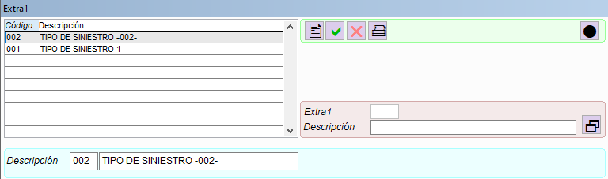
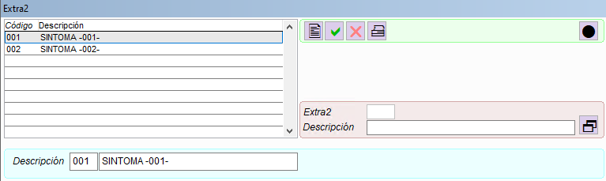
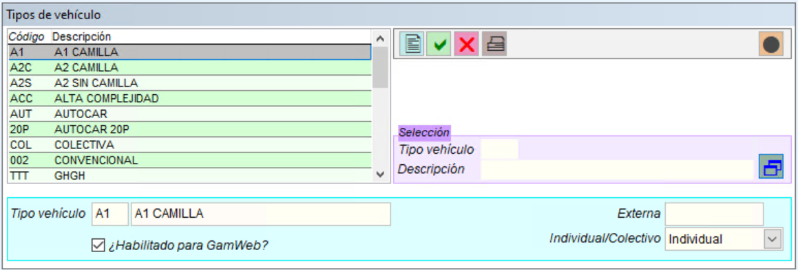
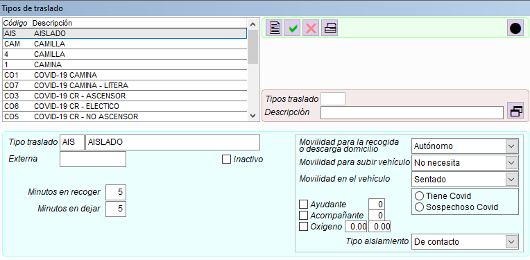
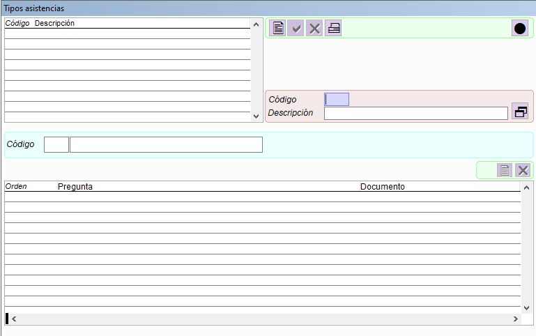
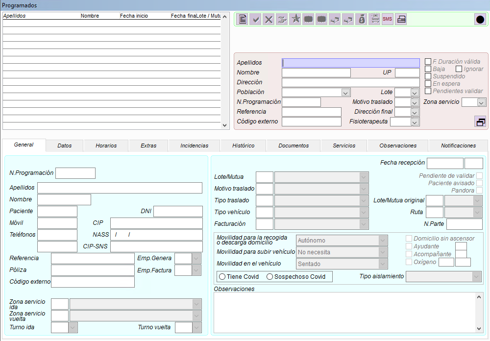
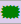
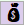
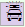
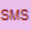

Gam ERP
Solución integral para la gestión del transporte sanitario
¿Qué es GAM ERP?
GAM ERP es el sistema de gestión desarrollado por Original Soft para empresas de transporte sanitario. Cubre el ciclo completo de la operativa: desde la recepción de un servicio y su adjudicación a un vehículo hasta la facturación, el control de la flota y los recursos humanos.
Los servicios pueden entrar en GAM por teléfono, email, importación de ficheros Excel, mediante el módulo GamWeb o integrando los protocolos de las mutuas o de la Administración. Una vez adjudicados, la información viaja al smartphone o tablet de la dotación mediante GamDroid, y los estados del servicio (recibido, en origen, evacuando, en destino, libre) se actualizan en tiempo real en el centro coordinador.
GAM cubre servicios de traslado de todo tipo: consultas sanitarias, altas hospitalarias, pruebas médicas, rehabilitaciones, diálisis, urgencias y servicios repetitivos programados con ruta automática.
Módulos del sistema
GAM se organiza en trece módulos accesibles desde las pestañas del menú superior:
Configuración general, empresas, usuarios, agenda y calendario
Tablas maestras: vehículos, tipos de traslado, personal y conceptos de facturación
Servicios periódicos individuales y colectivos, generación automática de rutas
Adjudicación y seguimiento de servicios en tiempo real — el núcleo operativo de GAM
Generación automática de facturas para Administración pública y entidades privadas
Control de entradas y salidas de material, pedidos a proveedor y trazabilidad
Órdenes de trabajo, control de costes de flota, ITV, siniestros y multas
Listados e informes estadísticos de todos los módulos
Herramientas de administración y configuración avanzada del sistema
Comunicación bidireccional entre la central y los vehículos (GamDroid)
Gestión de personal, cuadrantes, formación, control de presencia y nóminas
Portal de petición de servicios online para pacientes y empresas (GamWeb)
Cuadros de mando y análisis de datos integrados
Estructura de las ventanas
La mayoría de ventanas de GAM siguen una de estas dos estructuras. Identificarlas permite orientarse en cualquier pantalla del sistema sin necesidad de instrucciones adicionales.
Iconos de la barra de herramientas
La barra de iconos aparece en la parte superior de la mayoría de ventanas. Los iconos disponibles varían según las operaciones permitidas en cada ventana.
No todas las ventanas muestran todos los iconos. Los disponibles dependen de las operaciones permitidas. Por ejemplo, en Vehículos los iconos Nuevo y Eliminar están desactivados — esas operaciones se realizan desde el módulo Taller.
Atajos de teclado
GAM está optimizado para el trabajo con teclado. Estos son los atajos más importantes:
| F1 | Ventana directa — escribe el código (ej: 0204) |
| Alt | Cursor a las pestañas del menú |
| Alt + letra | Va directamente a la pestaña |
| ← → | Moverse entre pestañas |
| Ctrl+C | Copiar |
| Ctrl+V | Pegar |
| Ctrl+Z | Deshacer cambio en un campo |
| F2 | Nuevo registro |
| F4 | Eliminar registro |
| F5 | Guardar |
| F7 | Refrescar / Buscar |
| F11 | Imprimir / Exportar |
| F12 | Cerrar ventana / Salir |
| Tab | Siguiente campo |
| Shift+Tab | Campo anterior |
| Enter | Confirmar / avanzar |
| Esc | Cancelar / salir sin guardar |
| Ctrl+Inicio | Primer registro |
| Ctrl+Fin | Último registro |
| Re/Av Pág | Página anterior / siguiente |
| Doble clic | Abrir detalle del registro |
Funciones de ayuda del manual
Este manual dispone de varias herramientas para facilitar la consulta y el soporte:
Accesible desde el icono de lupa en el encabezado o con el atajo Ctrl+K. Permite localizar cualquier ventana, funcionalidad o término en todo el manual al instante, con resultados agrupados por módulo y fragmentos de contexto.
Disponible desde la pestaña Soporte. Responde preguntas sobre el funcionamiento de GAM en lenguaje natural, las 24 horas. Si GAMIA no puede resolver una consulta, abre automáticamente un ticket de soporte con el equipo de Original Soft.
Disponible directamente desde el botón Soporte del encabezado. Permite reportar incidencias o dudas al equipo técnico indicando el módulo, la ventana afectada y adjuntando una captura de pantalla si es necesario.
El botón Imprimir disponible en cada sección genera una ficha en formato PDF con el contenido de la ventana que se está consultando en ese momento, lista para imprimir o archivar como referencia rápida.
El botón Manual PDF del encabezado genera y descarga el manual íntegro en un único documento PDF, con todas las secciones publicadas hasta la fecha.
Módulo SISTEMA
Configuración general y herramientas comunes de GAM
La pestaña SISTEMA agrupa las funciones de configuración general, gestión transversal y herramientas comunes de GAM.
A diferencia de otros módulos más operativos, SISTEMA no está pensado para el trabajo diario sobre servicios, pacientes o vehículos, sino para definir el marco de funcionamiento en el que el resto del sistema opera.
Desde esta pestaña se gestionan aspectos como la configuración de empresas, la comunicación interna entre usuarios, las agendas compartidas, la consulta de avisos, la configuración básica del entorno de trabajo y otras utilidades generales.
No todos los apartados de la pestaña SISTEMA están destinados a todos los usuarios. Algunos contienen opciones sensibles que afectan al comportamiento global de GAM y, por tanto, solo deben ser utilizados por el administrador del sistema o por personas expresamente autorizadas.
En esta parte del manual se describen los apartados de la pestaña SISTEMA desde un punto de vista funcional y práctico, explicando para qué sirve cada opción, cómo se utiliza y qué implicaciones tiene su uso, con el objetivo de facilitar la consulta puntual y reducir incidencias por un uso incorrecto.
Ventanas de este módulo
Módulo opcional relacionado
Para empresas que operan con varias bases o delegaciones, GamDelegación permite conectar un GAM central con uno o varios GAM delegación. El central recopila toda la información y distribuye a cada delegación únicamente los datos que le corresponden. Los datos maestros se gestionan desde el central y se sincronizan automáticamente. Permite sincronizar mensajería interna, stock, flota y trabajadores entre todas las instalaciones.
Más información → original-soft.comMódulo MANTENIMIENTOS
Datos maestros y tablas de configuración de GAM
La pestaña MANTENIMIENTOS permite configurar los datos maestros de GAM — registros y listas — que se utilizarán posteriormente en otras ventanas del sistema mediante desplegables, selectores y códigos.
GAM se apoya en ventanas de mantenimiento, también llamadas ventanas de configuración, que contienen listas desplegables, registros fijos y tablas de datos maestros. Cuando se entrega el ERP, estos mantenimientos suelen estar vacíos o sin completar, porque cada empresa debe introducir sus propios datos, zonas y códigos según su operativa. Por este motivo no es posible entregar un GAM con una configuración estándar válida para todas las empresas.
Es importante la planificación anticipada de los códigos y descripciones a utilizar. Una buena planificación evitará duplicidades, datos sin sentido y listados confusos, y facilitará la extracción de información útil para analizar el funcionamiento de la empresa.
¿Cuándo se utiliza?
La pestaña MANTENIMIENTOS se trabaja principalmente en dos momentos:
Antes de que GAM sea operativo, como parte de la configuración inicial. Es necesario completar los datos maestros antes de empezar a trabajar con el resto de módulos.
Durante el uso de GAM, cuando sea necesario ampliar o ajustar datos maestros: añadir nuevos códigos, zonas o valores que la operativa requiera.
Qué se configura aquí
En MANTENIMIENTOS se crean los valores y registros que después afectan directamente a la operativa diaria: alimentan campos de selección, mejoran la calidad y consistencia de los datos, permiten listados más claros y facilitan filtros y búsquedas más precisas.
No se deben crear registros de prueba sin criterio, ya que pueden generar listas confusas, selecciones incorrectas y dificultad para filtrar o interpretar información más adelante. Si no ves alguna opción de esta pestaña, puede depender de permisos o configuración — consulta con tu responsable.
Ventanas de este módulo
Módulo PROGRAMADOS
Planificación, enrutamiento y gestión de servicios recurrentes
La pestaña PROGRAMADOS sirve para la planificación de servicios con antelación al día de su ejecución. Desde aquí se gestionan el registro de pacientes, la configuración de servicios recurrentes y el enrutamiento de la operativa, atendiendo las características especiales de cada servicio.
Es el módulo principal para servicios de carácter periódico: diálisis, rehabilitaciones, radioterapias y cualquier otro traslado que se repita con una frecuencia establecida. Para cada paciente se define la ficha de programación con sus horarios, origen, destino, tipo de traslado, vehículo asignado y todos los parámetros que condicionan el servicio.
Una correcta cumplimentación de los datos en este módulo, y el uso de las herramientas de planificación y enrutamiento que proporciona, son determinantes para que el servicio de coordinación pueda dirigir el día a día con el menor número de contratiempos y reducir al mínimo las demoras.
Los servicios generados desde PROGRAMADOS quedan disponibles para el módulo COORDINACIÓN, que se encarga de su seguimiento y adjudicación en tiempo real.
Ventanas de este módulo
Módulos opcionales relacionados
Generación automática de rutas y seguimiento en tiempo real. Calcula la planificación óptima de servicios para el día siguiente y permite recalcular la asignación de vehículos según posición actual durante todo el día.
Más información → original-soft.comAlta automática de servicios desde aseguradoras y mutuas. Los servicios se traspasan directamente a GAM desde el sistema informático de la compañía, llegando ya con la autorización y listos para ser adjudicados desde coordinación.
Más información → original-soft.comPetición de servicios por internet. Permite a usuarios autorizados de la Administración, hospitales o mutuas dar de alta servicios y programaciones directamente en GAM desde una página web personalizada.
Más información → original-soft.comVerificación de datos del paciente en la base de datos de la Administración. Al crear un servicio se indica el número de la seguridad social y la aplicación verifica y actualiza automáticamente los datos del paciente, eliminando duplicidades y errores en las fichas.
Más información → original-soft.comWeb integrada para consultas de pacientes. Permite al paciente consultar los datos de sus servicios y ver en un mapa la localización del vehículo adjudicado.
Más información → original-soft.comEnvío de SMS desde GAM a pacientes y trabajadores. Permite avisar al paciente de la llegada de la ambulancia, confirmar servicios o notificar cambios de horario de forma individual o masiva.
Más información → original-soft.comAutomatización de la atención al paciente mediante WhatsApp Business. Los pacientes pueden consultar datos de sus servicios, programaciones y tiempos de vehículos de forma automática, sin intervención manual del equipo.
Más información → original-soft.comPágina web con encuesta de satisfacción configurable orientada a los pacientes. Mediante un código QR, los pacientes acceden a una encuesta estandarizada cuyas respuestas quedan registradas en GAM junto a los datos del servicio.
Más información → original-soft.comMódulo COORDINACIÓN
El corazón operativo del transporte sanitario en tiempo real
La pestaña COORDINACIÓN es el corazón de las empresas de transporte sanitario. Es el punto de contacto con las personas para las que realmente trabajamos: los pacientes. Desde aquí los coordinadores llevan el control de la ejecución de la planificación y realizan cambios en tiempo real que se comunican directamente a los vehículos de la flota.
GAM recibe el servicio, gestiona las incidencias, registra la adjudicación y facilita el seguimiento, la finalización, la facturación y el cobro. El Centro Coordinador inicia cada servicio planificando las rutas y adjudicándolo a un vehículo, ya sea de forma manual o mediante el módulo GamRuta. A continuación, la información se envía al smartphone o tablet de la dotación, que va indicando los estados del servicio: recibido, activado, llegada a origen, salida de origen, llegada a destino, transfer, libre y final de servicio.
Desde esta pantalla también se anotan servicios esporádicos, urgentes o medicalizados para el día, y se gestiona cualquier incidencia o cambio de última hora que requiera ajustes sobre la planificación prevista.
Los servicios finalizados quedan guardados en GAM con el precio calculado y los datos asignados para facturación posterior. Desde el departamento administrativo es posible añadir extras como peajes, dietas, oxígeno o limpieza antes de su facturación.
Herramientas de coordinación
La pantalla de coordinación dispone de un amplio conjunto de herramientas que hacen el trabajo más ágil y efectivo:
Control GPS en tiempo real — visualización de la posición de cada vehículo de la flota en todo momento, permitiendo tomar decisiones de adjudicación con información actualizada.
Comunicación con pacientes y centros — mediante SMS, mensajería interna o GamDroid se puede contactar con los pacientes y centros sanitarios para gestionar cambios o incidencias sobre la marcha.
Seguimiento de estados — cada vehículo informa sus estados desde el terminal móvil, quedando registrado el historial completo del servicio.
Ventanas de este módulo
Módulos opcionales relacionados
Aplicación Android instalada en el smartphone o tablet de la dotación. Envía cada 20 segundos la posición GPS del vehículo a la central y permite intercambiar estados del servicio, mensajes, combustible, gastos, check-list del vehículo y petición de material.
Más información → original-soft.comIntegración online entre GAM y el departamento de sanidad de diferentes Administraciones autonómicas. Permite la recepción de servicios esporádicos y periódicos desde la Administración, con gestión de modificaciones, anulaciones y retornos de estado obligatorios.
Más información → original-soft.comAdjudicación de vehículos a servicios directamente desde el hospital. En formato web, se carga en una tablet para que el coordinador en sala de espera pueda adjudicar servicios con el paciente delante. Las acciones se sincronizan en tiempo real con la central.
Más información → original-soft.comGAM en modo desatendido para adjudicación automática. Cuando el centro de coordinación no tiene personal (noches, fines de semana, festivos), recibe servicios vía internet y los adjudica automáticamente a los vehículos disponibles, enviando un email o SMS a los conductores afectados.
Más información → original-soft.comAlta automática de servicios desde aseguradoras y mutuas. Los servicios llegan a GAM con la autorización y aparecen directamente en la pantalla de coordinación para ser adjudicados, seguidos y finalizados.
Más información → original-soft.comEnvío de información a la DGT para servicios de urgencia. GAM envía los datos del servicio urgente y la DGT los hace llegar a los vehículos cercanos para que cedan el paso a la ambulancia.
Más información → original-soft.comVisualización en pantalla grande en la sala de espera del hospital. Informa a los pacientes del tiempo de espera y del vehículo adjudicado para su recogida. El aviso desaparece automáticamente cuando el paciente sube a la ambulancia.
Más información → original-soft.comEnvío de SMS desde GAM a pacientes y trabajadores. Útil para avisar de la llegada de la ambulancia, confirmar servicios o notificar cambios de horario de forma individual o masiva.
Más información → original-soft.comPetición de servicios por internet. Permite a usuarios autorizados de la Administración, hospitales o mutuas dar de alta servicios en GAM desde una página web, que se validan en el departamento de coordinación antes de procesarse.
Más información → original-soft.comAtención automatizada al paciente mediante WhatsApp Business. Los pacientes pueden consultar datos de sus servicios y recibir información sin necesidad de intervención manual del equipo de coordinación.
Más información → original-soft.comEncuesta de satisfacción del paciente durante el trayecto. Accesible mediante tablet en la ambulancia, código QR o SMS al finalizar el servicio. Las respuestas quedan registradas en GAM con fecha, hora y ambulancia.
Más información → original-soft.comMódulo FACTURACIÓN
Control y generación de facturas para administración y entidades privadas
La pestaña FACTURACIÓN permite controlar las facturas individuales o por bloque de los servicios realizados. Desde aquí se crean las tarifas y, gracias a la combinación del tipo de vehículo y otros parámetros, GAM calcula automáticamente el coste de cada servicio y permite facturarlo casi al momento.
El proceso de facturación se basa en los servicios introducidos en el módulo Coordinación. A cada servicio se le asigna la empresa responsable del pago, vinculada a una tarifa con variables como tipo de vehículo, tipo de facturación, nocturnidad, festivos, kilómetros, espera, etc. A partir de esta relación GAM calcula el precio automáticamente.
Una vez revisados y validados los servicios, se generan las facturas correspondientes de forma individual o mediante el proceso de generación automática por lotes. La impresión es posible en diferentes formatos según el destinatario.
Desde este módulo también se lleva el control de clientes, facturas emitidas e impagadas, abonos, cobros y contabilización. GAM genera los asientos de factura y cobro/pago con exportación directa a ContaPlus, A3 u otras aplicaciones contables.
Desde el departamento administrativo es posible añadir extras a los servicios antes de facturar: peajes, dietas, oxígeno, limpieza, etc. Una vez marcados como correctos, quedan listos para su facturación a la Administración o a entidades privadas.
Ventanas de este módulo
Módulos opcionales relacionados
Integración online entre GAM y el departamento de sanidad de diferentes Administraciones autonómicas. Permite la recepción y envío de servicios con sus estados, así como la facturación directa hacia la Administración con todos los retornos obligatorios cubiertos.
Más información → original-soft.comAlta automática de servicios desde aseguradoras y mutuas mediante WebServices/API. Los servicios llegan a GAM con la autorización y los datos de facturación ya asignados, agilizando el proceso de cobro con las compañías de seguros.
Más información → original-soft.comPara empresas con varias bases o delegaciones, permite consolidar la facturación en un GAM central que recopila la información de todas las delegaciones, facilitando la gestión unificada de facturas, cobros y contabilización.
Más información → original-soft.comWeb integrada para consultas de pacientes. Permite al paciente consultar los datos y el estado de sus servicios, reduciendo las llamadas al departamento administrativo para seguimiento de facturas y servicios realizados.
Más información → original-soft.comMódulo STOCK
Control de existencias, entradas, salidas y revisiones de material
La pestaña STOCK controla las existencias de material de la empresa: productos sanitarios, vestuario de trabajo, material de oficina y cualquier otro artículo que forme parte del inventario. Gestiona el ciclo completo desde el pedido al proveedor hasta la entrega al vehículo o a la dotación.
Las entradas de material se registran mediante albaranes de entrada — directamente o vinculados a un pedido previo — incluyendo datos de trazabilidad como caducidad y lote. Las salidas se gestionan mediante albaranes internos o externos, con registro de entregas por almacén, vehículo o trabajador.
El sistema permite trabajar con la modalidad de stock mínimo: cuando el nivel de existencias de un artículo cae por debajo del mínimo configurado, GAM genera automáticamente el pedido al proveedor por defecto, agilizando la reposición y evitando roturas de stock.
El módulo STOCK sigue el proceso general de compra que exige la ISO, incluyendo pedido a proveedor, albarán de entrada con control de caducidad y lote, y recepción de material. El seguimiento de pedidos permite controlar fechas previstas de entrega y posibles entregas parciales.
Revisión diaria de vehículos (Check-List)
Desde STOCK también se gestionan las revisiones diarias de los vehículos. La dotación cumplimenta un check-list configurable con los puntos críticos del vehículo — niveles, luces, material sanitario, documentación, etc. — que queda registrado en GAM para su revisión por parte del responsable de flota. El diseño del check-list lo define la propia empresa de ambulancias según sus necesidades.
Ventanas de este módulo
Módulo opcional relacionado
Aplicación Android instalada en el smartphone o tablet de la dotación. Permite a la dotación enviar la revisión diaria del check-list del vehículo desde el propio terminal, solicitar material al almacén de central y registrar gastos y consumos directamente desde el vehículo. Sin GamDroid, estas operaciones deben introducirse manualmente desde la central.
Más información → original-soft.comMódulo TALLER
Gestión de flota, órdenes de trabajo y control de costes de vehículos
La pestaña TALLER agrupa todas las funciones relacionadas con la gestión y el control de la flota de vehículos. Comprende una ficha completa de cada vehículo con todos los datos necesarios para el taller, el centro de coordinación, la facturación y el control de stock.
Desde aquí se generan las órdenes de trabajo para cada intervención en un vehículo — tanto en taller propio como externo —, se registran los materiales utilizados y se controlan los costes de mano de obra. Cada orden queda vinculada al vehículo afectado, actualizando automáticamente las fechas de próxima revisión e ITV en su ficha.
Además de las intervenciones de taller, el módulo gestiona el calendario de avisos periódicos por vehículo: ITV, revisiones programadas, caducidades de tarjeta sanitaria o de transporte, pago de seguros y cualquier otro evento que requiera seguimiento. También se almacenan los siniestros — con datos del vehículo contrario, historial de peritajes y documentos adjuntos — y las multas, con su situación y el historial de recursos presentados ante la DGT.
El módulo contempla igualmente el control de los aparatos instalados en el vehículo: desfibriladores, smartphones, tablets y electromédicos. El gasto de combustible puede registrarse manualmente desde administración o directamente desde el terminal móvil de la dotación.
Revisión diaria de vehículos (Check-List)
El módulo TALLER incluye un sistema de revisión diaria configurable por tipo de vehículo. La dotación cumplimenta el check-list desde su terminal móvil al inicio del turno, verificando los puntos críticos definidos por la empresa: niveles de fluidos, estado de neumáticos, luces, material sanitario, documentación, equipos electromédicos, etc.
El responsable de flota recibe y revisa los check-list desde GAM, pudiendo generar una orden de trabajo directamente si detecta alguna incidencia. El histórico de revisiones queda almacenado por vehículo, facilitando el seguimiento del estado de la flota a lo largo del tiempo.
La disponibilidad de los vehículos puede registrarse desde las órdenes de trabajo para que el módulo de Coordinación tenga en cuenta qué vehículos están operativos en la próxima planificación.
Ventanas de este módulo
Módulos opcionales relacionados
Aplicación Android instalada en el smartphone o tablet de la dotación. Permite a la dotación cumplimentar el check-list diario del vehículo y enviarlo a la central al inicio del turno, registrar el combustible repostado, anotar gastos e incidencias y solicitar material al almacén — todo desde el propio vehículo y en tiempo real. Sin GamDroid, todas estas operaciones deben introducirse manualmente desde la central.
Más información → original-soft.comIntegración con los datos telemáticos de los vehículos Mercedes-Benz. Permite mostrar en GAM los parámetros internos de cada vehículo en tiempo real: kilómetros reales, nivel de combustible, estado de batería, presión de neumáticos, consumo medio, próximo mantenimiento, temperatura de motor, emisiones CO2, estilo de conducción y más de veinte parámetros adicionales. También genera avisos automáticos ante anomalías detectadas en el vehículo.
Más información → original-soft.comMódulo INFORMACIÓN
Listados, informes y estadísticas de toda la actividad de la empresa
La pestaña INFORMACIÓN centraliza todos los listados, informes y estadísticas generados a partir de los datos registrados en los demás módulos de GAM. Es la herramienta de consulta y análisis de la actividad de la empresa: servicios realizados, facturación, stock, taller, personal y pacientes.
Cada sección de INFORMACIÓN corresponde a un área operativa del sistema y permite filtrar, consultar y exportar los datos de la manera más conveniente para el análisis. Los listados pueden imprimirse o exportarse a Excel para su tratamiento externo.
Este módulo no modifica datos — es de solo consulta. Su función es proporcionar al equipo directivo y a los responsables de cada área la visibilidad necesaria para tomar decisiones basadas en información real y actualizada.
La calidad de los informes generados desde INFORMACIÓN depende directamente de la correcta cumplimentación de los datos en los módulos operativos. Una buena configuración de los mantenimientos, tarifas y parámetros de servicio se traduce en listados más claros y estadísticas más útiles.
Ventanas de este módulo
Módulos opcionales relacionados
Informe diario automatizado con el resumen personalizado del día anterior. Envía cada día, a la hora configurada, un email con un fichero Excel que incluye los datos clave de la actividad: servicios por tipo de traslado, demoras, personal y vehículos que trabajaron, incidencias, reclamaciones, combustible consumido, servicios por cliente, anulaciones y cualquier otro indicador que la empresa necesite. Los datos son personalizables para cada instalación.
Más información → original-soft.comPágina web con encuesta de satisfacción configurable orientada a los pacientes. Mediante un código QR, los pacientes acceden a una encuesta estandarizada cuyas respuestas quedan registradas en GAM junto a los datos del servicio: fecha, hora, ambulancia y dotación. Los resultados son consultables desde los informes del sistema.
Más información → original-soft.comEncuesta de satisfacción del paciente durante el trayecto. Accesible mediante tablet anclada en la ambulancia, código QR plastificado o SMS al finalizar el servicio. El paciente selecciona una de tres opciones de satisfacción y la respuesta queda registrada en GAM con fecha, hora y ambulancia, enriqueciendo los datos disponibles para el análisis de calidad del servicio.
Más información → original-soft.comMódulo UTILIDADES
Herramientas de administración, control de usuarios y consultas avanzadas
La pestaña UTILIDADES es corta en número de ventanas pero importante en sus funciones. Agrupa las herramientas de administración avanzada del sistema: extracción de información personalizada, control de accesos y permisos de usuarios, procesos de mantenimiento de datos y consultas directas a la base de datos.
Es una pestaña destinada principalmente al administrador del sistema y a perfiles técnicos autorizados. Algunas de sus opciones — como la ejecución de instrucciones SQL o los procesos de datos — tienen un impacto directo sobre la base de datos de GAM y deben utilizarse con precaución y siempre bajo supervisión técnica.
Las opciones de esta pestaña están reservadas al administrador del sistema o a personas con autorización expresa. Un uso incorrecto de herramientas como la ejecución de SQL o los procesos de datos puede afectar al funcionamiento global de GAM. Consulta siempre con Original Soft antes de ejecutar operaciones que no sean de consulta.
Ventanas de este módulo
Módulo TELECOMUNICACIONES
Gestión y sincronización de datos entre la central y los vehículos
La pestaña TELECOMUNICACIONES gestiona el intercambio de datos entre la central y los terminales móviles instalados en los vehículos. Es el módulo que configura y mantiene operativo el canal de comunicación bidireccional que permite a GAM enviar y recibir información de la flota en tiempo real.
Una de las características fundamentales del éxito de GAM es precisamente esta integración: la información generada por las dotaciones — estados del servicio, combustible, gastos, check-list, incidencias — llega automáticamente a la central sin necesidad de intervención manual, y los datos de servicios y avisos se transmiten al terminal del vehículo en el momento de la adjudicación.
El sistema de comunicaciones está basado en GamDroid, la aplicación Android desarrollada por Original Soft que se instala en tablets o smartphones de la dotación. Aprovecha el GPS del dispositivo para enviar cada 20 segundos la posición actual del vehículo a GAM en la central, comportándose como una extensión de la propia aplicación.
Original Soft dispone de un equipo especializado en comunicaciones, integraciones e intercambio de datos entre diferentes fuentes e interfaces, y puede integrarse con cualquier sistema, servidor o interfaz externo.
La configuración de este módulo es técnica y habitualmente la realiza el equipo de Original Soft durante la implantación. Las modificaciones sobre terminales o tablas auxiliares deben coordinarse con el soporte técnico para evitar pérdidas de sincronización con los vehículos.
Ventanas de este módulo
Módulo RRHH
Gestión de personal, cuadrantes, formación y control de presencia
La pestaña RRHH gestiona toda la información relacionada con el personal de la empresa. Dispone de la ficha completa de cada trabajador con los datos necesarios para generar el cuadrante diario, controlar la formación, gestionar los avisos de caducidad de carnés y mantener la información necesaria para IRPF y nóminas.
El módulo permite registrar y consultar las entradas y salidas de cada empleado, el material entregado, el combustible consumido, las multas, los siniestros y el historial de incidencias. Toda esta información centralizada facilita el trabajo del responsable del cuadrante y del departamento de administración.
La generación del cuadrante es una de las funciones principales del módulo. A partir de la información introducida en la ficha de cada trabajador, GAM es capaz de generar el cuadrante mensual o anual con los horarios de entrada y salida, el vehículo asignado y el tipo de turno. El cuadrante teórico puede contrastarse con el cuadrante real utilizando los datos recogidos por GamDroid desde los vehículos o por el terminal de huella digital instalado en las bases.
El módulo de formación permite controlar los cursos realizados por cada dotación, con avisos automáticos de caducidad de carnés y certificaciones. GAM ofrece también la posibilidad de generar las nóminas automáticamente o exportar los datos a una aplicación de nóminas externa.
Ventanas de este módulo
Módulos opcionales relacionados
Portal del trabajador integrado a GAM. Permite a cada empleado acceder desde una web a su información personal: calendario laboral, viajes y preventivos realizados, impresión de nóminas, hojas de rendimiento para la declaración de la renta, estadísticas de servicios propios, días personales, tablón de anuncios, noticias de la empresa y solicitudes de cambio de guardia.
Más información → original-soft.comControl de presencia integrado con GAM. Mediante una aplicación web o un lector de huella digital instalado en las bases, registra los horarios de entrada y salida del personal. Al estar conectado al cuadrante de GAM, genera automáticamente las comparativas entre los horarios teóricos y los reales. Puede instalarse en todas las bases de la empresa con una simple conexión a internet, y envía notificaciones a los trabajadores en el momento del fichaje.
Más información → original-soft.comMódulo WEB
Canal de comunicación y gestión entre la empresa y sus trabajadores
La pestaña WEB es el módulo de comunicación entre la empresa y sus trabajadores. Está estrechamente ligada al módulo RRHH y extiende su funcionalidad hacia un canal bidireccional que permite mantener el contacto con la plantilla, gestionar solicitudes del personal y distribuir información de manera organizada y trazable.
Desde aquí se gestionan los mensajes a los trabajadores — tanto individuales como masivos —, se validan las solicitudes de cambio de turno, permisos y vacaciones enviadas por el personal, y se organizan la asignación de viajes, preventivos y días a cubrir. También permite lanzar encuestas internas y consultar sus respuestas, facilitando la participación del equipo en la toma de decisiones o la recogida de información.
El módulo WEB actúa como back-office del portal del trabajador: todo lo que el empleado solicita o consulta desde su portal queda pendiente de validación en esta pestaña, donde el responsable de RRHH o el coordinador puede revisarlo, aprobarlo o rechazarlo con el correspondiente registro en el historial.
Para que los trabajadores puedan acceder al portal y enviar solicitudes, es necesario tener activo el módulo opcional GamIntra. Las ventanas de validación de este módulo son el complemento de gestión interna de dicho portal.
Ventanas de este módulo
Módulos opcionales relacionados
Portal del trabajador integrado a GAM. Permite a cada empleado acceder desde una web a su calendario laboral, viajes y preventivos, nóminas, hojas de rendimiento para hacienda, estadísticas de servicios propios, tablón de anuncios y noticias. Desde aquí el trabajador también puede solicitar cambios de guardia, permisos y vacaciones, que quedan pendientes de validación en el módulo WEB de GAM.
Más información → original-soft.comAutomatización de la comunicación mediante WhatsApp Business. Además de su uso orientado a pacientes, permite enviar notificaciones y mensajes a los trabajadores a través de WhatsApp, complementando los canales de comunicación disponibles en este módulo.
Más información → original-soft.comMódulo POWERBI
Cuadros de mando y análisis visual de datos integrados con GAM
La pestaña POWERBI integra cuadros de mando visuales directamente en GAM, alimentados con los datos reales de la operativa de la empresa. Cada cuadro de mando corresponde a un área de negocio y ofrece una visión gráfica e interactiva del rendimiento, facilitando el análisis y la toma de decisiones a nivel directivo y de área.
A diferencia del módulo INFORMACIÓN, que genera listados y exportaciones de datos, POWERBI presenta la información de forma visual — gráficos, indicadores, tendencias y comparativas — permitiendo identificar patrones y desviaciones de un vistazo, sin necesidad de procesar datos manualmente.
Los cuadros de mando están conectados a la base de datos de GAM y se actualizan con la información más reciente, proporcionando una fotografía real del estado de la empresa en cada momento.
Los cuadros de mando disponibles y su configuración dependen de la instalación. Original Soft puede adaptar o ampliar los paneles según las necesidades específicas de cada empresa.
Ventanas de este módulo
Módulo opcional relacionado
Informe diario automatizado con el resumen personalizado del día anterior. Complementa los cuadros de mando de POWERBI con un envío diario por email — a la hora configurada — de un fichero Excel con los indicadores clave de la jornada: servicios realizados, demoras, vehículos y personal que trabajaron, incidencias, combustible consumido, anulaciones y cualquier otro dato que la empresa necesite monitorizar. Los indicadores son completamente personalizables para cada instalación.
Más información → original-soft.comEmpresas

La ventana «Empresas» está destinada a la configuración general del funcionamiento de Gam.
Desde esta sección se definen parámetros que afectan de forma transversal a todo el sistema, influyendo en el comportamiento de distintos módulos, usuarios y procesos internos.
No se trata de un apartado operativo ni de uso habitual. Las opciones que se configuran aquí condicionan cómo trabaja Gam en su conjunto, por lo que una modificación incorrecta puede provocar incidencias en múltiples áreas del sistema.
Por este motivo, el acceso a este apartado debe estar restringido exclusivamente al:
- Administrador del sistema,
- o personas expresamente autorizadas y con conocimiento del impacto de los cambios que se realicen.
El usuario final no debe modificar ni experimentar con las opciones de este apartado. En caso de detectar la necesidad de un cambio en la configuración de empresa, deberá comunicarlo a la persona responsable para que lo valore y lo aplique, si procede.
Debido a su carácter sensible y estructural, la configuración detallada la ventana «Empresas» se documenta en un módulo independiente, separado del presente manual, con el objetivo de evitar confusiones y usos indebidos
Empresas «anexo avanzado»
Este modulo está acotado a personal autoriado de la empresa, si desea optener mas información dirijase al administrador del sistema de su empresa.
Si es usted la persona autorizada de su empresa y no dispone del manual anexo avanzado de GAM ERP, solicite una copia a SOPORTE mediante el formulario de este manual.
Envío de avisos a usuarios

Objetivos
La ventana -Envío de avisos a usuarios- permite la comunicación interna entre los usuarios de Gam.
Este sistema de avisos está diseñado exclusivamente para la comunicación entre personas usuarias del sistema y no corresponde al envío de mensajes a vehículos ni a terminales móviles de flota.
Se trata de una herramienta pensada para transmitir información interna de forma organizada y trazable y no debe utilizarse como canal de comunicación urgente, ya que la recepción del mensaje depende del estado del sistema y de los usuarios conectados en ese momento.
Selección de destinatarios
Para enviar un aviso es necesario seleccionar previamente el usuario o usuarios destinatarios.
.png)
Mediante los campos de filtro, se puede buscar:
- Un usuario concreto,
- Un rol/ grupo de usuarios
- Una vez definido el filtro, se deben cargar los resultados:
- Pulsando F7, o utilizando el icono de refrescar. refrescar_F7.png
Para que los usuarios aparezcan en el listado de destinatarios, deben tener informada su Empresa en Menú Utilidades → Permisos de usuarios.
Si se desea enviar un aviso a varios usuarios sin aplicar un filtro concreto:
- Se dejarán los campos de filtro en blanco,
- Se cargará el listado completo y se seleccionarán manualmente los usuarios deseados.
.png)
Cuando se necesite eliminar una selección ya realizada, puede hacerse utilizando las funciones de ratón asociadas a los iconos, tal y como se describe en el apartado de funcionamiento general del sistema.
Redacción del aviso
Una vez seleccionados los destinatarios, se procede a la redacción del mensaje.
El aviso se compone de:
- Un campo de fecha y hora, que permite: enviar el mensaje de forma inmediata, o programarlo para un momento posterior;
- Un campo de descripción, que actúa como título o asunto del aviso;
- Un campo de texto, donde se redacta el contenido del mensaje.
.png)
En el campo de fecha:
.png)
- al hacer clic derecho aparece un calendario para seleccionar el día,
- la hora se introduce manualmente,
- o mediante doble clic se puede asignar directamente la fecha y hora actuales.
Envío del aviso
Al ejecutar la acción:
- el mensaje queda enviado o programado según la fecha indicada,
- la ventana de envío se cierra automáticamente.
Recepción de avisos
Los avisos enviados se reciben en el equipo del usuario destinatario mediante una ventana emergente.
.png)
La aparición del aviso puede ser:
- Inmediata,
- Producirse al cabo de unos instantes, en función de la carga del servidor central y del número de usuarios conectados.
- Si el usuario cierra la ventana sin marcar el aviso como leído, el sistema volverá a mostrarlo de forma periódica. Cada 5 minutos, GAM revisa si existen avisos pendientes para ese usuario y, si los hay, los mostrará de nuevo hasta que se marquen como “Visto”.
Marcado de avisos como “Visto”
El receptor del aviso puede marcarlo como “Visto” desde la propia ventana del mensaje.
.png)
Al marcar el aviso como visto:
- se registra la fecha y hora de lectura,
- el aviso deja de aparecer como emergente,
- su estado no puede modificarse posteriormente.
- El emisor del aviso solo puede consultar el estado del mensaje, pero no puede marcarlo ni modificarlo.
Envío de avisos a uno mismo
El sistema permite enviar avisos a uno mismo, seleccionándose como destinatario.
- Este uso resulta especialmente útil como:
- sistema de recordatorios,
- agenda personal de avisos,
- o notas internas programadas para una fecha concreta.
El comportamiento de estos avisos es idéntico al de cualquier otro mensaje recibido.
Los avisos enviados y recibidos pueden consultarse posteriormente desde la ventana -Consulta avisos-, donde queda registrado el histórico completo de comunicaciones internas. Pero ya no se podrán editar o borrar
Agenda de direcciones

La ventana de -Agenda de direcciones- funciona como una agenda compartida dentro de Gam, accesible para los usuarios según los permisos asignados.
Su objetivo es facilitar la consulta rápida de datos de contacto que resultan necesarios en el trabajo diario, independientemente de que el usuario tenga o no acceso al módulo donde se gestiona la ficha completa de ese contacto.
Finalidad de la agenda
La agenda de direcciones permite consultar información básica de:
- proveedores,
- taxis,
- restaurantes,
- mutuas,
- y otros contactos externos relevantes.
Es especialmente útil cuando:
- El usuario no tiene acceso al módulo específico donde se gestiona ese dato (por ejemplo, flota, facturación o clientes), pero necesita disponer de información mínima como un teléfono, una dirección o una persona de contacto. De este modo, la agenda actúa como punto común de consulta, favoreciendo el trabajo en equipo y evitando dependencias innecesarias entre departamentos.
Acciones básicas disponibles
Además de consultar información, desde la Agenda de direcciones (si el usuario dispone de permisos) es posible:
- Dar de alta un registro. F2 o su icono
- Guardar los cambios del registro. F5 o su icono.
- Borrar un registro.F4 o su icono
- Imprimir el listado estándar de la agenda. F11 o su icono
- Para cerrar las ventanas siempre utilizaremos F12 o su icono
Estructura de la ventana
La ventana de la agenda sigue la estructura habitual de Gam:
- Zona de filtro, que permite localizar registros por distintos criterios.
- Listado de resultados, con los registros que cumplen el filtro aplicado.
- Zona de detalle, donde se muestran los datos del registro seleccionado con un solo clic.
Categorías y subcategorías
Los registros de la agenda se organizan mediante:
- categorías, que definen el tipo general de contacto,
- subcategorías, que permiten una clasificación más concreta.
Esta organización facilita la localización de información y el control de accesos.
Control de acceso a los registros
El acceso a los registros de la agenda no es libre, sino que está regulado por niveles de acceso.
Este control se basa en dos elementos:
Nivel de acceso del usuario,
Definido en -Permisos de usuarios-, mediante el campo Acceso agenda.
.png)
Nivel de acceso del registro,
Definido en el mantenimiento de categorías, en el campo Acceso usuarios.
El usuario solo podrá ver y consultar aquellos registros cuya categoría tenga un nivel de acceso igual o inferior al que tenga asignado.
Si un registro no aparece en la agenda, habitualmente se debe a una restricción de acceso, no a un error del sistema.
Alta y mantenimiento de categorías
Los campos de categoría y subcategoría son campos desplegables.
Mediante el botón derecho del ratón sobre estos campos es posible acceder directamente a su mantenimiento, desde donde se pueden:
- crear nuevas categorías,
- modificar las existentes,
- o eliminar registros,
siempre que el usuario disponga de los permisos necesarios.
Uso operativo de la agenda
Desde la agenda de direcciones es posible:
- consultar teléfonos y direcciones,
- identificar personas de contacto,
- Revisar observaciones relevantes para la operativa diaria.
En función de la configuración del sistema:
- los registros pueden sincronizarse con la agenda del terminal del vehículo (Gamdroid),
- y, si el módulo correspondiente está activo, se pueden: enviar SMS o mensajes de WhatsApp directamente desde el icono habilitado, o imprimir listados de contactos mediante el icono de imprimir (F11).
La agenda es una herramienta compartida: la calidad de la información afecta a todos los usuarios / No sustituye a los módulos específicos, sino que complementa su uso / Muchas incidencias se producen porque un usuario no ve un registro que otro sí ve; en la mayoría de casos, la causa está en el nivel de acceso configurado.
Agenda del personal

El apartado -Agenda del personal- permite la consulta rápida de los datos básicos de los trabajadores y colaboradores registrados en Gam.
Esta agenda está pensada como una herramienta de consulta, no de gestión, y facilita el acceso a información mínima sin necesidad de entrar en la ventana completa de personal.
Origen de la información
La información mostrada en esta agenda se alimenta automáticamente desde la pestaña de RRHH en la ventana -Personal-.
Esto implica que:
- Las altas, bajas y modificaciones de trabajadores no se realizan desde esta ventana,
- Cualquier cambio en los datos debe hacerse siempre desde la ventana de Personal por un usuario con los permisos correspondientes.
Estructura de la ventana
La ventana sigue la estructura habitual de Gam:
- Zona de filtro, que permite buscar trabajadores por distintos criterios.
- Listado de resultados, con los trabajadores que cumplen el filtro aplicado.
- Zona de detalle, donde se muestran los datos del trabajador seleccionado. La selección de un trabajador se realiza con un solo clic sobre el registro, mostrando automáticamente su información ampliada.
Tras informar los criterios en la zona de filtro, se actualiza el listado con F7 (o el icono de refrescar), igual que en el resto de ventanas de GAM.
Información disponible
Desde la Agenda del personal se pueden consultar, entre otros, los siguientes datos:
- Código de trabajador
- Nombre y apellidos
- Teléfono / Móvil
- Empresa / Turno
- Perfil operativo (por ejemplo: chófer, ayudante, médico, DUE)
Limitaciones de uso
La Agenda del personal es una ventana exclusivamente de consulta. Los iconos de edición no están activos en ningún caso. No es posible modificar datos desde este apartado, independientemente del perfil del usuario.
Si se necesita realizar una modificación:
- el usuario deberá acceder a la ventana -Personal- si dispone de permisos, o
- solicitar el cambio a la persona responsable con acceso, por ejemplo mediante -Envío de avisos a usuarios-
Es un acceso rápido y visual a datos del personal; no es posible modificar, dar de alta ni eliminar desde esta opción.
Uso recomendado
Esta agenda resulta especialmente útil para la coordinación diaria, consulta rápida de teléfonos o roles e identificación de personal activo sin riesgo de modificar información sensible.
Enlaces recomendados
- Ver también: -Personal (Pestaña RRHH)-
- Ver también: -Envío de avisos a usuarios- (para solicitar cambios si no tienes permisos)
Consulta avisos

El apartado -Consulta avisos- permite consultar el histórico de avisos internos enviados y recibidos entre usuarios de Gam. Se trata de una ventana de consulta y seguimiento, no de envío.
Relación con el envío de avisos
Este apartado está directamente relacionado con -Envío de avisos a usuarios-. Mientras que el envío se realiza desde -Envío de avisos a usuarios-, -Consulta avisos-se utiliza exclusivamente para consultar los avisos existentes.
Además de consultar el contenido, esta ventana permite hacer seguimiento:
- Si eres el emisor, puedes verificar si el aviso ha sido leído o no por los destinatarios.
- Si eres el receptor, puedes consultar tus avisos indicando cuándo lo recibiste, quién lo envió y si fue leído o no.
Estructura y Filtros
En el listado se muestran datos como fecha del aviso, descripción, usuario emisor, usuario receptor y el estado leído / no leído (seguimiento de lectura).
Desde la zona de filtros es posible definir un rango de fechas e indicar si se desean mostrar sólo avisos no vistos o incluir también los ya vistos.
Para cargar los resultados, pulsar F7 o el icono de refrescar. 
Lectura de un aviso
Para leer el contenido completo es necesario realizar doble clic sobre el registro en el listado. Al abrirlo, se muestra el contenido completo junto con los datos de envío y recepción.
- Usuario emisor: puede consultar el aviso y comprobar si el destinatario lo ha leído o no.
- Usuario receptor: puede consultarlo y, si marca el aviso como “Visto”, se registra automáticamente la fecha y hora de lectura.
Cambiar password

-Cambiar password- permite al usuario actual modificar su contraseña de acceso a GAM de forma rápida, sin necesidad de acceder a Pestaña Utilidades → Permisos de usuarios.
Procedimiento y Cambio Obligatorio
Para cambiarla manualmente, introduzca la nueva contraseña, repita en el campo de confirmación y pulse ejecutar.
En determinadas situaciones, Gam puede solicitar obligatoriamente el cambio al iniciar sesión (por políticas de seguridad o petición del administrador). En estos casos, el cambio es un requisito obligatorio para acceder al entorno de trabajo.
Cambio obligatorio (forzado por el administrador):
Si se desea obligar a un usuario a cambiar su contraseña en el próximo inicio de sesión, debe accederse a Pestaña Utilidades → -Permisos de usuarios- y marcar la opción “Cambiar password”. La próxima vez que el usuario entre a GAM, el sistema forzará el cambio antes de permitir el acceso al entorno de trabajo.
Qué NO se hace en esta ventana:
Desde -Cambiar password- solo se cambia la contraseña del usuario que está conectado. Para gestionar contraseñas o forzar cambios de otros usuarios se utiliza Pestaña Utilidades → -Permisos de usuarios-
La contraseña es personal e intransferible. Se recomienda no compartirla ni reutilizar contraseñas anteriores.
Calendario

El apartado - Calendario- ofrece una vista integrada en la Pestaña Sistema con fines principalmente informativos. No tiene una función operativa directa sobre servicios, pero sirve de apoyo para la planificación. Además, en otras ventanas se utiliza como selector de fechas.
Visualización y Navegación
Muestra el mes actual con el día destacado. En la primera columna se muestra el número de semana, útil para identificar semanas pares/impares y apoyar la programación de servicios. Se puede navegar entre meses mediante las flechas de la cabecera y saltar de año haciendo clic sobre la cifra del año en la cabecera.
Cierre de la ventana
Para salir del calendario, se realiza doble clic sobre el día actual. También se puede utilizar el icono de Cerrar ventana
Uso del calendario en campos de fecha (toda la aplicación)
Esta herramienta está presente en todos los campos de fecha de GAM:
- Se accede con clic derecho sobre el campo de fecha.
- Se selecciona el día con doble clic.
Esto es importante porque 0108 no es solo una “pantalla informativa” en GAM: el mismo calendario se utiliza como selector de fecha en el resto de ventanas.
Qué NO se hace en esta ventana: El calendario no modifica servicios ni configura datos. Se utiliza como consulta/recordatorio y como selector de fecha cuando se abre desde un campo de fecha.
Configurar impresora

Permite escoger una impresora específica para ser utilizada en GAM (listados e informes), sin necesidad de utilizar la impresora predeterminada de Windows. . Es una ventana estándar del sistema operativo. Permite seleccionar la impresora (física o PDF), acceder a propiedades (tamaño de papel, orientación) y establecer la bandeja de salida. Para guardar los cambios, debe aceptar la configuración.
Esta opción no instala impresoras: solo muestra las impresoras ya instaladas en el PC y permite seleccionar cuál usará GAM.
Salir del programa
Permite cerrar completamente la aplicación Gam y finalizar la sesión.
Al ejecutar esta opción: se cierran todas las ventanas, se finaliza la sesión y se sale del programa. Equivale a pulsar el icono Cerrar (F12) (círculo negro). 
En la pantalla principal si clicamos con el botón derecho sobre el icono, se nos abrirá una pestaña nueva con las novedades de GAM
Comprobar que no hay cambios pendientes de guardar y cerrar correctamente las ventanas de edición antes de ejecutar la salida.
Qué NO se hace en esta ventana: no guarda cambios automáticamente; si hay ediciones abiertas, deben guardarse antes de salir.
Extra 1
Objetivo
Los mantenimientos Extra1 y Extra2 permiten crear valores auxiliares para clasificar servicios (programados o esporádicos). Estos campos no tienen una definición fija: cada empresa decide para qué los utiliza (por ejemplo, tipo de siniestro, subcategorías internas de traslados, etc.).
Descripción de la ventana
Extra1 y Extra2 son dos mantenimientos con el mismo funcionamiento. La diferencia es únicamente el campo en el que se seleccionarán posteriormente (Extra1 o Extra2) en las pantallas de servicio.
Diferencia importante: NO es lo mismo que “0513 — Extras de servicios”
Extra1/Extra2 no son “Extras de servicios”.
- Extra1 / Extra2: clasificación (valores auxiliares).
- 0513 — Extras de servicios: «extras económicos» aplicados a un servicio (por ejemplo, peajes).
Dónde se utiliza
Los valores de Extra1 y Extra2 se utilizan en:
- 401 / 402 / 403 — Altas de servicio
- 0302 — Ficha de programados (pestaña Datos)
- 0411 — Mantenimiento de servicios (pestaña Datos 1)
Qué ves en pantalla
La ventana de Extra1 y Extra2 presenta la misma estructura:
Listado (izquierda)
Columnas: Código y Descripción.
Selección / Filtro (derecha)
Permite buscar por código y/o descripción (según pantalla).
Detalle (parte inferior)
Campo Descripción del registro seleccionado.
Barra de iconos (superior)
Acciones de mantenimiento (alta, guardar, eliminar, imprimir, cerrar).
Iconos y controles
- Nuevo — F2: inicia el alta de un registro nuevo.
- Guardar — F5: guarda el registro o los cambios realizados.
- Eliminar — F4: elimina el registro seleccionado (pregunta confirmación).
- Imprimir/Exportar — F11: imprime o exporta (según configuración).
- Cerrar — F12: cierra la ventana.
Campos
- Código: en este mantenimiento lo introduce el usuario (habitualmente numérico como 001/002, pero puede ser alfanumérico).
- Descripción: texto visible que se mostrará al seleccionar el valor en pantallas de servicio.
Procedimientos habituales
Comprobar si un valor ya existe (evitar duplicados)
- Usar la zona Selección/Filtro para buscar por un término similar.
- Revisar el listado antes de crear un registro nuevo.
Crear un valor nuevo (Extra1 o Extra2)
- Comprobar primero si existe (ver 6.1).
- Pulsar Nuevo F2.
- Informar Código y Descripción.
- Pulsar Guardar F5.
Modificar un valor existente (recomendación importante)
- Seleccionar el registro.
- Modificar la Descripción.
- Guardar con Guardar F5.
Si se modifica la descripción para “reaprovechar” un registro, el cambio se aplica también a servicios ya existentes (histórico). En listados, se mostrará la descripción nueva y no la antigua.
Eliminar un valor (y efecto en servicios)
- Seleccionar el registro.
- Pulsar Eliminar F4.
- Confirmar el mensaje de seguridad (por ejemplo: “¿Seguro que quieres eliminarlo?”).
Comportamiento observado en Extra1/Extra2:
- El sistema permite eliminar el registro.
- En servicios donde se utilizó ese valor, puede quedar el código guardado pero la descripción quedará en blanco.
Qué NO se hace en este mantenimiento
- No se configuran extras económicos del servicio: para eso existe 0513 — Extras de servicios.
No se recomienda “reaprovechar” códigos cambiando descripciones si se necesita mantener trazabilidad histórica en listados.
Si no ves esta opción, puede depender de permisos o configuración. Consulta con tu responsable.
Capturas


.png)
Extra 2
Objetivo
Los mantenimientos Extra1 y Extra2 permiten crear valores auxiliares para clasificar servicios (programados o esporádicos). Estos campos no tienen una definición fija: cada empresa decide para qué los utiliza (por ejemplo, tipo de siniestro, subcategorías internas de traslados, etc.).
Descripción de la ventana
Extra1 y Extra2 son dos mantenimientos con el mismo funcionamiento. La diferencia es únicamente el campo en el que se seleccionarán posteriormente (Extra1 o Extra2) en las pantallas de servicio.
Diferencia importante: NO es lo mismo que “0513 — Extras de servicios”
Extra1/Extra2 no son “Extras de servicios”.
- Extra1 / Extra2: clasificación (valores auxiliares).
- 0513 — Extras de servicios: «extras económicos» aplicados a un servicio (por ejemplo, peajes).
Dónde se utiliza
Los valores de Extra1 y Extra2 se utilizan en:
- 401 / 402 / 403 — Altas de servicio
- 0302 — Ficha de programados (pestaña Datos)
- 0411 — Mantenimiento de servicios (pestaña Datos 1)
Qué ves en pantalla
La ventana de Extra1 y Extra2 presenta la misma estructura:
Listado (izquierda)
Columnas: Código y Descripción.
Selección / Filtro (derecha)
Permite buscar por código y/o descripción (según pantalla).
Detalle (parte inferior)
Campo Descripción del registro seleccionado.
Barra de iconos (superior)
Acciones de mantenimiento (alta, guardar, eliminar, imprimir, cerrar).
Iconos y controles
- Nuevo — F2: inicia el alta de un registro nuevo.
- Guardar — F5: guarda el registro o los cambios realizados.
- Eliminar — F4: elimina el registro seleccionado (pregunta confirmación).
- Imprimir/Exportar — F11: imprime o exporta (según configuración).
- Cerrar — F12: cierra la ventana.
Campos
- Código: en este mantenimiento lo introduce el usuario (habitualmente numérico como 001/002, pero puede ser alfanumérico).
- Descripción: texto visible que se mostrará al seleccionar el valor en pantallas de servicio.
Procedimientos habituales
Comprobar si un valor ya existe (evitar duplicados)
- Usar la zona Selección/Filtro para buscar por un término similar.
- Revisar el listado antes de crear un registro nuevo.
Crear un valor nuevo (Extra1 o Extra2)
- Comprobar primero si existe (ver 6.1).
- Pulsar Nuevo F2.
- Informar Código y Descripción.
- Pulsar Guardar F5.
Modificar un valor existente (recomendación importante)
- Seleccionar el registro.
- Modificar la Descripción.
- Guardar con Guardar F5.
Si se modifica la descripción para “reaprovechar” un registro, el cambio se aplica también a servicios ya existentes (histórico). En listados, se mostrará la descripción nueva y no la antigua.
Eliminar un valor (y efecto en servicios)
- Seleccionar el registro.
- Pulsar Eliminar F4.
- Confirmar el mensaje de seguridad (por ejemplo: “¿Seguro que quieres eliminarlo?”).
Comportamiento observado en Extra1/Extra2:
- El sistema permite eliminar el registro.
- En servicios donde se utilizó ese valor, puede quedar el código guardado pero la descripción quedará en blanco.
Qué NO se hace en este mantenimiento
- No se configuran extras económicos del servicio: para eso existe 0513 — Extras de servicios.
No se recomienda “reaprovechar” códigos cambiando descripciones si se necesita mantener trazabilidad histórica en listados.
Si no ves esta opción, puede depender de permisos o configuración. Consulta con tu responsable.
Capturas
Extra 1
Objetivo
Los mantenimientos Extra1 y Extra2 permiten crear valores auxiliares para clasificar servicios (programados o esporádicos). Estos campos no tienen una definición fija: cada empresa decide para qué los utiliza (por ejemplo, tipo de siniestro, subcategorías internas de traslados, etc.).
Descripción de la ventana
Extra1 y Extra2 son dos mantenimientos con el mismo funcionamiento. La diferencia es únicamente el campo en el que se seleccionarán posteriormente (Extra1 o Extra2) en las pantallas de servicio.
NO es lo mismo que "0513 — Extras de servicios". Extra1/Extra2 son valores de clasificación; los Extras de servicios son extras económicos aplicados a un servicio (por ejemplo, peajes).
Dónde se utiliza
Los valores de Extra1 y Extra2 se utilizan en:
- 401 / 402 / 403 — Altas de servicio
- 0302 — Ficha de programados (pestaña Datos)
- 0411 — Mantenimiento de servicios (pestaña Datos 1)
Qué ves en pantalla
La ventana presenta la misma estructura en Extra1 y Extra2:
- Listado (izquierda) — columnas Código y Descripción.
- Selección / Filtro (derecha) — permite buscar por código y/o descripción.
- Detalle (parte inferior) — campo Descripción del registro seleccionado.
- Barra de iconos (superior) — acciones de mantenimiento.
Iconos y controles
- Nuevo — F2: inicia el alta de un registro nuevo.
- Guardar — F5: guarda el registro o los cambios realizados.
- Eliminar — F4: elimina el registro seleccionado (pide confirmación).
- Imprimir/Exportar — F11: imprime o exporta según configuración.
- Cerrar — F12: cierra la ventana.
Campos
- Código: lo introduce el usuario (habitualmente numérico como 001/002, pero puede ser alfanumérico).
- Descripción: texto visible que se mostrará al seleccionar el valor en pantallas de servicio.
Procedimientos habituales
Crear un valor nuevo
- Comprobar primero si ya existe usando el filtro.
- Pulsar Nuevo F2.
- Informar Código y Descripción.
- Pulsar Guardar F5.
Modificar un valor existente
- Seleccionar el registro.
- Modificar la Descripción.
- Guardar con F5.
Si se modifica la descripción para "reaprovechar" un registro, el cambio se aplica también a servicios ya existentes (histórico). En listados aparecerá la descripción nueva, no la original.
Eliminar un valor
- Seleccionar el registro y pulsar Eliminar F4.
- Confirmar el mensaje de seguridad.
- En servicios donde se usó ese valor, el código queda guardado pero la descripción quedará en blanco.
No se recomienda "reaprovechar" códigos cambiando descripciones si se necesita mantener trazabilidad histórica en listados.
Si no ves esta opción puede depender de permisos o configuración. Consulta con tu responsable.
Capturas
Extra 2
El funcionamiento de Extra2 es idéntico al de Extra1. Consulta la sección Extra1 para ver la descripción completa de campos, procedimientos e iconos.
La única diferencia es que los valores creados aquí se asignan al campo Extra2 en las pantallas de servicio, mientras que los de Extra1 se asignan al campo Extra1.
Si tu empresa no diferencia entre Extra1 y Extra2, es habitual mantener los mismos valores en ambas tablas.
Capturas
Vehículos
Antes de trabajar con la ficha 0204 – Vehículos (Coordinación), es necesario que existan y estén configurados los siguientes datos en GAM. En caso contrario, algunos campos no se podrán informar, aparecerán vacíos o no ofrecerán opciones en sus desplegables.
Ficha de vehículos (Pestaña Taller) obligatorio;Los datos maestros de la ventana de vehículos en mantenimiento, se alimenta de mantenimiento de vehículos en la pestaña de taller. Si el vehículo no existe en Ficha de Vehículos de taller, no existirá en Ficha de Vehículos mantenimientos.
Datos para campos editables de ficha de vehiculos (dependencias)
Los siguientes mantenimientos/fichas alimentan campos editables (o configurables) dentro de la ficha de vehículos en mantenimientos:
- Personal (Pestaña RRHH) Necesario para campos relacionados con dotación, especialmente TES habitual y para que el sistema pueda reflejar TES actual cuando el personal se loguea/queda asociado operativamente.
- Recursos Necesario para el campo Recurso (y para evitar “reaprovechar” la Descripción del vehículo cuando lo que cambia es su asignación operativa).
- Tipos de traslado Necesario para la tabla/bloque de configuraciones (combinaciones) donde se selecciona Tipo de traslado por fila. Nota: si un tipo de traslado está marcado como Inactivo en 0207, no aparece en el desplegable de 0204.
Datos que el sistema puede cumplimentar y que dependen de mantenimientos
Algunos campos que se muestran en 0204 pueden depender de datos previos para funcionar correctamente:
- Paradas Necesario para que el campo Parada pueda reflejar información coherente cuando el sistema lo cumpla/lo utilice (según operativa y configuración).
Objetivo
La ventana — Vehículos es la ficha que utiliza Coordinación para consultar y mantener los datos operativos de los vehículos que le competen (dotaciones, estado operativo, capacidades/configuraciones y datos de apoyo a la coordinación).
Relación con Taller y alcance real de esta ficha
Esta ventana muestra la flota con los datos informados previamente en Pestaña de Ficha de vehículos / Taller. Por ello, parte de la información es solo de consulta y únicamente algunos campos están disponibles para edición. Además, la ficha dispone de un acceso al histórico de modificaciones del registro (“pececitos”).
Recalcar:
Hay campos que en “Vehículos” solo son informativos y no se pueden modificar
- En “Vehículos” no se permite:
- Dar de alta un vehículo nuevo.
- Eliminar un vehículo existente.
En definitiva, alta y baja de vehículos se realizan desde la ficha de vehículos / Taller. En vehículos/ Mantenimiento se trabaja la parte operativa para coordinación.
Qué ves en pantalla (zonas)
Selección / Filtro (zona superior derecha)
Permite filtrar por uno o varios campos (o ninguno):
- Vehículo, Matrícula, Descripción, etc.
- Check Inactivos.
Para cargar/actualizar la lista de resultados se utiliza Refrescar F7 (o su icono).
Listado (zona izquierda)
- El listado muestra los resultados del filtro.
- Si el filtro está en blanco, se muestran todos los vehículos existentes.
- Al posicionarse sobre un registro, su información se muestra extendida en la ficha inferior.
Ficha (zona inferior)
Muestra los datos del vehículo seleccionado:
- Campos informativos (bloqueados por venir de Taller).
- Campos autocompletados por el sistema.
- Campos editables para coordinación.
Iconos (recordatorio en esta ventana)
En esta ventana se trabaja principalmente con:
- Guardar — F5: guarda cambios en los campos que sean editables.
- Refrescar — F7: actualiza el listado según filtros.
- Historial de cambios : muestra el histórico de cambios de la ficha.
- Cerrar — F12: cierra la ventana.
Nota: aunque se vean iconos “típicos” de mantenimiento, en vehículos no está permitido crear ni eliminar fichas. (Estos iconos están desactivados)
Campos: qué es informativo, qué se autocompleta y qué se edita
Campos informativos (NO editables en vehículos)
Estos campos vienen de la ficha de Taller y en 0204 se muestran como consulta:
- Código (Vehículo) (no puede cambiarse)
- Descripción
- INACTIVO
- Matrícula
- Modelo
(trazabilidad): El Código (Vehículo) es el identificador interno que conserva el historial. No puede cambiarse.La Descripción es cómo “conoce” el usuario el vehículo (rotulación, base, indicativo, etc.).No se debe cambiar la descripción para simular un cambio de vehículo (por ejemplo, sustituir un vehículo de una zona por otro), porque se pierde trazabilidad y los listados dejan de ser fiables. Para eso existen otros campos operativos (por ejemplo Recurso, u otros campos destinados a asignación).
Campos que el sistema va cumplimentando
El sistema puede completar automáticamente (y mostrarlos en esta ficha) campos como:
- Comidas
- Parada
- Dirección final
- Población final
- TES actual
- Sirena
- Pánico activado (además, se puede activar o desactivar manualmente)
Estos campos ayudan a coordinación a ver el estado y la situación operativa del vehículo.
Campos editables (según necesidades)
El resto de campos se consideran editables en vehículos según operativa y permisos (por ejemplo observaciones, dotaciones habituales, capacidades, características, etc.).
Dotación: TES habitual vs TES actual
Este punto es clave para coordinación:
- TES habitual: dotación asignada habitualmente al vehículo.
- TES actual: dotación que está con el vehículo en ese momento. Puede diferir del habitual si, por programación, se ha ajustado la dotación para servicios posteriores o por necesidades operativas. El sistema muestra qué dotación se ha logueado en el vehículo y va realmente con él.
Plazas y combinaciones en vehículo colectivo
Tabla de combinaciones
En el bloque de combinaciones aparecen columnas:
- Asientos
- S. Ruedas
- Camilla
- Tipos traslado (desplegable por fila)
Cada fila define una combinación posible de capacidad del vehículo (por ejemplo X asientos + Y sillas de ruedas + Z camillas) asociada al tipo de traslado seleccionado en esa fila.
Cuándo es “efectivo” y cuándo es solo informativo
- Si se utiliza GamRuta, estas combinaciones son necesarias y efectivas (se usan de forma operativa).
- Si no se utiliza GamRuta, el bloque actúa como información/configuración de referencia.
Plazas y plazas convertibles
- Plazas: total de plazas del vehículo.
- Plazas convertibles a silla ruedas o camilla: plazas que pueden reconvertirse según necesidad.
Procedimientos habituales en Vehículos/mantenimientos
Buscar y consultar un vehículo
- Introducir 0, 1 o varios filtros (Vehículo/Matrícula/Descripción…).
- Pulsar Refrescar F7.
- Seleccionar el vehículo en el listado para ver su ficha completa.
- (Opcional) Consultar el Historial de cambios (“pececitos”) para auditoría.
Actualizar datos operativos del vehículo
- Seleccionar el vehículo.
- Modificar los campos editables que correspondan (no los que vienen de Taller).
- Guardar con Guardar F5.
En vehículos no se realizan altas ni bajas de vehículos.
Qué NO se hace en esta ventana
- No se pueden crear vehículos nuevos ni eliminarlos desde esta ficha (se gestiona en Taller).
- No se pueden modificar en vehículos, los campos maestros: Código, Descripción, Inactivo, Matrícula y Modelo.
- No se debe alterar la Descripción para “reaprovechar” un vehículo y representar otro, porque se pierde trazabilidad.
Si no ves este mantenimiento, puede depender de permisos o configuración. Consulta con tu responsable.
Capturas

.png)
Tipos de vehículo
Objetivo
El mantenimiento Tipos de vehículo permite crear y mantener la lista de tipos que se utilizarán para clasificar/seleccionar el vehículo requerido en distintas pantallas (altas de servicio, programados, ficha de vehículos, etc.)
Se recomienda definir estos tipos con una nomenclatura coherente para mejorar filtros, listados y trazabilidad.
Descripción de la ventana
En esta ventana se gestionan registros con:
- Código (alfanumérico) del tipo.
- Descripción del tipo.
- Indicador Individual/Colectivo.
- Campo Externa (uso en vehículo externo).
- Check ¿Habilitado para GamWeb? (visibilidad en solicitudes web).
Recomendación de nomenclatura: Tipos de vehículo es la tipología de la flota en concordancia con su uso (por ejemplo: Normal, Colectivo, Avanzada, Urgencias, Convencional, UVI…) por lo tanto, recomendamos utilizar códigos oficiales cuando aplique (por ejemplo A1, A2, B, C…) y añadir los tipos necesarios según la flota/operativa de la empresa (bariátrica, microbús, intervención, vehículo taller, etc.).
Para evitar confusiones: este mantenimiento no es el “modelo” del vehículo. El campo “Modelo” que aparece en otras fichas (por ejemplo vehículo) corresponde a otro mantenimiento/campo distinto.
Dónde se utiliza
Este campo es importante y aparece, como mínimo, en:
- Ficha de programados
- Alta de servicios (Normal, UCI, Programados)
- Ficha de vehículos (Taller)
También puede aparecer en otras ventanas/funciones según configuración.
Qué ves en pantalla
Selección / Filtro
Permite introducir en filtro: ningún dato, uno o varios (por ejemplo “Tipo vehículo”, “Descripción”).
Para actualizar el listado de resultados se utiliza Refrescar F7 (o su icono). 
Listado de resultados
Muestra los registros existentes (Código y Descripción). Al seleccionar un registro, se visualiza su detalle en la parte inferior.
Detalle
Muestra y permite editar (según permisos):
- Tipo vehículo (código)
- Descripción
- Externa
- Individual/Colectivo
- ¿Habilitado para GamWeb?
Iconos y controles
| Icono | Función | Atajo |
|---|---|---|
| Nuevo: Crear nuevo registro | F2 | |
| Guardar: Guarda alta o cambios del registro | F5 | |
| Eliminar: Elimina registro | F4 | |
| Refrescar: Actualiza listado según filtro | F7 | |
| Imprimir/Exportar: Imprime en pdf o papel /exporta a excel o otros formatos | F11 | |
| Cerrar: Cierra la ventana actual | F12 |
Campos
- Código (Tipo vehículo): se informa manualmente y puede ser alfanumérico.
- Descripción: texto libre.
- Individual/Colectivo: define si el tipo corresponde a un transporte individual o colectivo.
- Externa: se utiliza cuando el servicio requiere vehículo externo. En este campo se indica la empresa (u otra referencia acordada) necesaria para identificar el externo.
- ¿Habilitado para GamWeb?: si está marcado, el tipo podrá aparecer en la solicitud de servicios a través de GamWeb (si el módulo está activo).
Procedimientos habituales
Buscar para evitar duplicados
- Introducir 0, 1 o varios filtros (Tipo vehículo / Descripción).
- Pulsar Refrescar F7.
- Revisar el listado para comprobar si ya existe un registro igual o similar.
Crear un tipo de vehículo
- Realizar la búsqueda previa.
- Pulsar Nuevo F2.
- Informar:
- Código (alfanumérico).
- Descripción.
- Individual/Colectivo.
- Externa solo si aplica a vehículo externo (indicar empresa).
- Marcar ¿Habilitado para GamWeb? si debe mostrarse en solicitudes web.
- Pulsar Guardar F5.
Modificar un tipo existente (advertencia de histórico)
- Seleccionar el registro en el listado.
- Modificar los campos necesarios (normalmente Descripción y/o atributos).
- Guardar con Guardar F5.
Si se cambia la Descripción, el cambio se reflejará también en el histórico (registros antiguos). No se recomienda cambiarla salvo que haya cambiado el criterio general y se acepte su impacto en listados/histórico.
Eliminar un tipo de vehículo (y efecto en registros previos)
- Seleccionar el registro.
- Pulsar Eliminar F4 y confirmar.
Al eliminar un tipo, en los registros donde se utilizaba el campo quedará en blanco. Por este motivo, se recomienda eliminar únicamente si fue creado por error o se acepta perder esa referencia en consultas/listados históricos.
Qué NO se hace en esta ventana
- No usar esta ventana para gestionar “modelos” de vehículo: es otro campo/mantenimiento.
- No cambiar descripciones “por reutilizar” un tipo si no se acepta el impacto en histórico.
- No eliminar tipos usados si se necesita mantener trazabilidad completa (al eliminar, el campo queda en blanco en registros donde se utilizó).
Si no ves esta opción, puede depender de permisos o configuración. Consulta con tu responsable.
Capturas

- Ver también: Ficha de vehículos (Taller)
Motivo de traslado

Objetivo
En la práctica, el motivo de traslado indica el “porqué” un paciente realiza una programación
(por ejemplo: consulta, ingreso hospitalario, diálisis, radioterapia...). Este dato se utiliza en
distintas partes de GAM para reglas de funcionamiento, generación de servicios programados y funcionalidades relacionadas con GamRuta.
Descripción de la ventana
En esta ventana se crean registros con código y descripción, y se configuran opciones que afectan al comportamiento del motivo (si genera vuelta, si es urgente, si se permite en festivo, color en coordinación, envío de SMS, etc.).
Como en otros mantenimientos, los cambios (edición o eliminación) pueden afectar a la trazabilidad si el motivo ya se ha utilizado en servicios.
Dónde se utiliza
El Motivo de traslado se utiliza principalmente para:
- Aplicar reglas del sistema.
- Funcionalidades asociadas a GamRuta.
- Comportamiento y visualización en pantallas de:
- Planificación
- Coordinación: Información útil a Planificadores, Coordinadores y dotaciones
Qué ves en pantalla
Selección / Filtro
Permite buscar por Motivo de traslado y/o Descripción.
Para actualizar el listado se utiliza Refrescar F7 (o su icono/botón de refresh).
Listado de resultados
Muestra los motivos existentes (Código y Descripción). Al seleccionar uno, su configuración aparece en la parte inferior.
Detalle del motivo
Incluye:
- Código y Descripción.: lo introduce el usuario y puede ser alfanumérico.
- Tipo de trayecto (radios):
- Domicilio–Hospital / Hospital–Domicilio / Hospital–Hospital / Domicilio–Domicilio / Otros
- Checks de comportamiento:
- Día festivo
- ¿Habilitado para GamWeb?
- ¿Este motivo tiene vuelta?
- ¿Es urgente?
- Enviar SMS al validar
- Campos adicionales:
- Externa
- Color coordinación
- Minutos (parámetros pensados principalmente para GamRuta)
– Minutos añadir al servicio de vuelta – Minutos margen recoger antes (Origen) – Minutos margen recoger antes (Solo vuelta) – Minutos margen recoger después (Origen)
Iconos y controles
| Icono | Función | Atajo |
|---|---|---|
| Nuevo: Crear nuevo registro | F2 | |
| Guardar: Guarda alta o cambios del registro | F5 | |
| Eliminar: Elimina registro | F4 | |
| Refrescar: Actualiza listado según filtro | F7 | |
| Imprimir/Exportar: Imprime en pdf o papel /exporta a excel o otros formatos | F11 | |
| Cerrar: Cierra la ventana actual | F12 |
Reglas y advertencias de trazabilidad
Se puede modificar un motivo (por ejemplo su descripción), pero el cambio se refleja también en el histórico.
- Si se desea mantener trazabilidad en listados e histórico, no se recomienda cambiar un motivo que ya esté en uso, salvo que haya cambiado el criterio general y se acepte el impacto.
Significado de opciones y campos
Tipo de trayecto (radios)
Se utiliza principalmente para reglas y para GamRuta (clasificación del tipo de desplazamiento).
¿Habilitado para GamWeb?
Afecta a la visualización en la sol·licitud de servicios vía web (GAMWEB):
- Aparecerá en la selección de motivo de traslado) en los servicios solicitados por GAMWEB (si el módulo opcional està instalado)
Día festivo
Afecta a la generación de servicios programados:
- Cuando se generan servicios y el día está marcado como festivo, solo se generarán los servicios cuyo motivo tenga marcado el check Día festivo.
- Uso típico: Hemodiálisis y, raramente, algún otro tratamiento.
¿Este motivo tiene vuelta?
Cuando se da de alta un servicio con un motivo que tiene vuelta:
- El sistema puede generar el servicio de vuelta (automático).
¿Es urgente?
Afecta a la visualización en listados:
- En Planificación y Coordinación, el fondo del campo Nombre del paciente se mostrará en color rojo.
Enviar SMS al validar
Al validar en pantallas de Planificación o Coordinación:
- Se envía un SMS al paciente con la hora de recogida asignada. (si el módulo opcional està instalado)
Externa
Campo para uso en escenarios externos (misma lógica general que otros mantenimientos). Confirmado: se utiliza con criterio “empresa” (u otra referencia equivalente definida por la organización).
Color coordinación
Afecta a la visualización en listados:
- En Planificación y Coordinación, el fondo del campo Población de origen se mostrará con el color asignado.
Campos de minutos (GamRuta)
Estos campos están pensados principalmente para GamRuta. (si el módulo opcional està instalado) En caso de programación manual, sirven como referencia informativa.
- Minutos añadir al servicio de vuelta
- Minutos margen recoger antes (Origen)
- Minutos margen recoger antes (Solo vuelta)
- Minutos margen recoger después (Origen)
Procedimientos habituales
Buscar un motivo (evitar duplicados)
- Rellenar 0, 1 o varios filtros (Motivo traslado / Descripción).
- Pulsar Refrescar F7.
- Revisar el listado antes de crear uno nuevo.
Crear un motivo de traslado
- Buscar primero para evitar duplicados (ver 8.1).
- Pulsar Nuevo F2.
- Informar:
- Código (alfanumérico)
- Descripción
- Tipo de trayecto (radios)
- Checks necesarios (festivo, vuelta, urgente, SMS, GamWeb…)
- Color coordinación y parámetros (si aplica)
- Guardar con Guardar F5.
Modificar un motivo existente (con criterio)
- Seleccionar el motivo.
- Realizar cambios solo si son necesarios y se acepta el impacto en histórico.
- Guardar con Guardar F5.
Qué NO se hace en esta ventana
- No se recomienda modificar descripciones de motivos ya utilizados si se necesita mantener trazabilidad histórica.
- No se deben marcar opciones (festivo/vuelta/urgente/SMS) sin criterio, ya que impactan en generación de servicios y en pantallas operativas.
Si no ves esta opción, puede depender de permisos o configuración. Consulta con tu responsable.
Tipos de traslado
Objetivo
El mantenimiento Tipos de traslado permite definir cómo se traslada un paciente (por ejemplo: Normal, Camilla, Silla de ruedas…). Cuando se selecciona un tipo de traslado en un servicio, sus parámetros se copian como valores por defecto (movilidad, requisitos y tiempos), ayudando a estandarizar la operativa y facilitando reglas y planificación, especialmente con GamRuta.
Descripción de la ventana
En esta ventana se crean registros con:
- Código y Descripción del tipo de traslado.
- Parámetros de tiempos (minutos en recoger/dejar).
- Parámetros de movilidad (recogida en domicilio, subida al vehículo, movilidad en el vehículo).
- Requisitos del servicio/paciente (ayudante, acompañante, oxígeno).
- Variables Covid y tipo de aislamiento.
- Campo de codificación externa (para integración/administración/compañías).
- Estado Inactivo.
Dónde se utiliza
El campo Tipo de traslado se utiliza en la ficha del servicio y se selecciona/consulta en estas ventanas:
Los tipos marcados como Inactivo no se ofrecen para selección en desplegables/altas.
- Vehículos (Coordinación): en la tabla de combinaciones de vehículos colectivos existe el campo Tipo de traslado (desplegable por fila), que utiliza los registros definidos en esta ventana.
- Altas de servicio (según tipo): al seleccionar un tipo de traslado, se copian al servicio sus valores por defecto (movilidad, requisitos, tiempos, etc.).
- Ficha de programados (pestaña Datos): se informa el tipo de traslado para que, al generar servicios desde programados, el servicio herede los valores por defecto.
- Mantenimiento de servicios (pestaña Datos 1): consulta/ajuste del tipo de traslado en servicios ya existentes (según permisos).
- Planificación: el tipo de traslado forma parte de la información del servicio y se usa como referencia operativa (y para reglas si están configuradas).Disponible a partir de la versión 1324: existe filtro por Tipo de Traslado en Planificación.
- Pantalla de coordinación: el tipo de traslado forma parte de la información del servicio y se usa como referencia operativa en la gestión diaria.
Además, su configuración se aprovecha especialmente en:
- Reglas GamRuta (minutos, movilidad, requisitos), y en programación manual como referencia informativa.
Qué ves en pantalla
Selección / Filtro
Permite buscar por Tipos traslado y/o Descripción. Para actualizar el listado se utiliza Refrescar F7 (o su icono/botón de refresh).
Listado de resultados
Muestra los registros existentes (Código y Descripción). Al seleccionar uno, su configuración aparece en la parte inferior.
Detalle del tipo de traslado
Incluye:
- Tipo traslado (código) y Descripción: manual, puede ser alfanumérico, y no se autonumera.
- Externa (codificación externa)
- Check Inactivo
- Minutos en recoger / Minutos en dejar
- Bloque de Movilidad (3 desplegables)
- Requisitos: Ayudante, Acompañante, Oxígeno (con 2 valores)
- Covid: Tiene Covid / Sospechoso Covid
- Tipo aislamiento (desplegable)
Iconos y controles
| Icono | Función | Atajo |
|---|---|---|
| Nuevo: Crear nuevo registro | F2 | |
| Guardar: Guarda alta o cambios del registro | F5 | |
| Eliminar: Elimina registro | F4 | |
| Refrescar: Actualiza listado según filtro | F7 | |
| Cerrar: Cierra la ventana actual | F12 |
Reglas y trazabilidad (muy importante)
- Modificaciones: si se modifica un tipo (descripción o parámetros), el comportamiento es el “habitual” de mantenimientos: se refleja también en el histórico. No se recomienda modificar registros ya utilizados si se necesita mantener trazabilidad.
- Eliminación: mismo comportamiento que 0205/0206: si se elimina un tipo utilizado, en los registros donde se usaba el campo quedará en blanco. Se recomienda eliminar solo si fue creado por error o se acepta perder esa referencia histórica.
Significado de campos y configuración
Externa (codificación externa)
Campo destinado a la codificación externa del tipo de traslado (por ejemplo: administración, compañía, u otros sistemas integrados).
Minutos en recoger / Minutos en dejar
- Se utilizan y aplican principalmente en GamRuta.
- En programación manual, sirven como referencia para estimar tiempos del servicio.
Movilidad (3 desplegables)
Estos desplegables están definidos de serie en el sistema y permiten clasificar la movilidad del servicio para:
- Operativa del traslado (qué necesita el paciente).
- Ayudar a definir el tipo de vehículo más adecuado.
- Determinar si existe posibilidad de colectivizar el servicio (según criterios operativos).
Campos:
- Movilidad para la recogida o descarga domicilio (ejemplos de valores: Autónomo, Silla transporte, Oruga manual, Oruga eléctrica, Sube escaleras eléctrico, Silla propia, Otros)
- Movilidad para subir vehículo (ejemplos: Rampa, Oruga eléctrica, Sube escaleras eléctrico, etc.)
- Movilidad en el vehículo (ejemplos: Silla propia, Camilla, Silla especial, Camilla cuchara-tabla, Otros)
Los valores exactos dependen de los desplegables estándar del sistema (ver capturas de Movilidad).
Requisitos del servicio/paciente
- Ayudante y Acompañante: indican necesidades/requisitos del servicio.
- Oxígeno: indica que el servicio requiere oxígeno y se informa con dos valores:
- Litros
- Concentración
Covid y aislamiento
- Tiene Covid / Sospechoso Covid: al seleccionar el tipo de traslado, este valor se copia al servicio como valor por defecto y sirve como referencia operativa (EPIs/medidas), según protocolos internos.
- Tipo aislamiento: desplegable definido de serie que indica el tipo de aislamiento a aplicar al paciente (por ejemplo: contacto, aéreo, por gotas, combinaciones, enfermedad infecciosa activa, etc.).
Inactivo
- Si un tipo está marcado como Inactivo, no aparecerá para seleccionarlo en las altas de servicio.
- En esta ventana, no se utiliza un filtro específico de “mostrar inactivos”; aún así, el registro aparece en los resultados de búsqueda/listado dentro del mantenimiento.
Procedimientos habituales
Buscar para evitar duplicados
- Introducir 0, 1 o varios filtros (Tipos traslado / Descripción).
- Pulsar Refrescar F7.
- Revisar el listado antes de crear uno nuevo.
Crear un tipo de traslado
- Buscar primero (ver 9.1).
- Pulsar Nuevo F2.
- Informar:
- Código (alfanumérico) y Descripción
- Externa (si aplica)
- Minutos de recoger/dejar (si aplica)
- Movilidad (3 desplegables)
- Requisitos: Ayudante/Acompañante/Oxígeno (litros y concentración)
- Covid y Tipo aislamiento si corresponde
- Guardar con Guardar F5.
Modificar o desactivar un tipo existente
- Modificar solo si se acepta el impacto en histórico.
- Si se quiere dejar de usar un tipo sin perder trazabilidad, se recomienda marcarlo como Inactivo (en lugar de eliminarlo).
Qué NO se hace en esta ventana
- No se recomienda eliminar tipos en uso si se requiere mantener histórico completo (al eliminar, el campo puede quedar en blanco en servicios anteriores).
- No se recomienda modificar descripciones o parámetros de tipos ya utilizados si se necesita trazabilidad.
Si no ves esta opción, puede depender de permisos o configuración. Consulta con tu responsable.
Capturas

.png)
.png)
Enlaces recomendados
- Ver también: Motivo de traslado
- Ver también: GamRuta (si está habilitado)
Incidencias

Objetivo
Esta ventana permite dar de alta y mantener un catálogo de incidencias internas para clasificar lo que ocurre en la empresa dentro del Registro diario, servicio o Gamweb (solicitud de servicios)
Dónde se utiliza esta información
Registro diario, Servicio, Gamweb: el usuario selecciona una incidencia del catálogo para clasificar el registro, y al guardar puede dispararse el envío de email (si está configurado).
Cómo buscar (filtros) y lista de resultados
- Puedes no rellenar nada (verás todos los registros), rellenar uno o varios filtros.
- Para refrescar resultados: F7 (o su icono).

- Al seleccionar un registro en la lista, se cargan sus datos en la zona inferior.
Campos de la ficha
Código
- Alfanumérico de 3 caracteres, se introduce manual.
- No se puede editar una vez guardado.
Descripción
- Texto libre para identificar la incidencia (ej.: “CORTE DE LUZ”, “CAMBIO TÓNER IMPRESORA…”).
- Si cambias la descripción, el cambio se reflejará también cuando se consulte el histórico (mismo comportamiento general que ya estás aplicando en otras ventanas).
Tipo
Cada incidencia puede asociarse a un tipo de incidencia y a un correo electrónico, de forma que al registrar una incidencia en se pueda enviar automáticamente una copia al email configurado.
Indica a qué ámbito aplica la incidencia. En el desplegable aparecen:
- Servicio
- Web
- Registro Diario
Email al que se enviará la copia de la incidencia (p. ej. WEB@Ambulancias.com).
Si se informa, al crear la incidencia y guardarla, se disparará el envío.
Para que el mail se envie, la salida de mails tiene que estar configurado en la ventana Sistema/ Empresa
Acciones e iconos (teclas rápidas)
| Icono | Función | Atajo |
|---|---|---|
| Nuevo: Crear una nueva incidencia (código + descripción + tipo + email) | F2 | |
| Guardar: Si el registro “ya existe”, GAM avisa, pero finalmente lo guarda. Esto nos sirve por si queremos generar una misma incidencia para varios usos. Tendremos que tener en cuenta vigilar en no duplicar una incidencia y que esté asignada a diferentes usos | F5 | |
| Eliminar: No hay “Inactivo” en esta ventana, la única manera de que no salga en listado es borrar.Pero el borrado sigue el comportamiento habitual: en el histórico queda el código, pero la descripción puede quedar en blanco. Si se quiere una trazabilidad de los datos se recomienda no borrar nada. | F4 | |
| Refrescar: Actualiza listado según filtro | F7 | |
| Imprimir/Exportar: Imprime en pdf o papel /exporta a excel o otros formatos | F11 | |
| Cerrar: Cierra la ventana actual | F12 |
Recomendación de trabajo (evitar duplicados)
- Antes de crear, buscar con filtros (F7) para comprobar si ya existe una incidencia igual o similar.
- Si no existe: F2 → completar campos → F5.
Qué NO se hace en esta ventana
- No se dan altas de incidencias/motivos de anulación de los servicios.
Las opciones de esta ventana dependerán de los permisos de usuario. Si alguna acción no funciona o no aparece, consulta con el responsable del sistema de tu empresa para revisar los permisos.
Tipos de asistencias

Objetivo de esta ventana
La ventana Tipos de asistencias permite mantener un catálogo de tipos de asistencia (Código + Descripción) y, para cada tipo, definir una lista de Preguntas asociadas (con orden) y un campo Documento para vincular un archivo relacionado, Estos son los cuestionarios de asistencias que posteriormente se podrán cumplimentar en el servicio de “Salud Responde”.
Estructura de la ventana
Listado de tipos (parte superior izquierda)
Muestra los tipos de asistencia existentes con sus columnas:
- Código
- Descripción
Zona de selección/filtro (parte superior derecha)
Permite filtrar/buscar por:
- Código
- Descripción
Detalle del tipo (zona central)
Muestra el tipo seleccionado (Código y Descripción).
Rejilla de Preguntas (parte inferior)
Permite gestionar las preguntas del tipo seleccionado mediante columnas:
- Orden
- Pregunta
- Documento (ruta del archivo asociado)
Buscar un tipo de asistencia (evitar duplicados)
- Informa 0, 1 o varios campos del filtro (Código y/o Descripción).
- Actualiza el listado (refresco habitual en GAM).
- Revisa si ya existe un tipo equivalente antes de crear uno nuevo.
Crear un tipo de asistencia
- Verifica antes con el filtro que no exista ya.
- Crea un nuevo registro (acción habitual de Nuevo).
- Informa:
- Código (alfanumérico).
- Descripción (texto libre).
- Guarda el registro (acción habitual de Guardar).
Importante: para poder crear Preguntas, primero es necesario guardar el tipo de asistencia.
Modificar un tipo de asistencia
- Selecciona el registro en el listado.
- Modifica la Descripción si procede.
- Guarda los cambios.
Si se “reaprovecha” un registro cambiando la descripción, puede afectar a la trazabilidad de datos históricos (aplica el mismo criterio que en otros mantenimientos).
Eliminar un tipo de asistencia
Al eliminar un tipo de asistencia:
- El sistema permite el borrado.
- En los registros donde se haya utilizado, queda el código, pero la descripción aparecerá en blanco.
Evitar borrar tipos usados si se necesita trazabilidad histórica. Si el objetivo es dejar de utilizarlo, es preferible mantenerlo y crear un tipo nuevo (según criterio interno de la empresa).
Preguntas del tipo de asistencia
Crear preguntas
- Selecciona el tipo de asistencia.
- Asegúrate de que el tipo esté guardado.
- Añade las preguntas en la rejilla inferior informando:
- Orden (recomendación: 10, 20, 30… para facilitar inserciones futuras).
- Pregunta (texto corto y claro).
- Documento (si aplica): ruta del archivo asociado.
Campo “Documento”
El campo Documento guarda una ruta a un fichero relacionado con esa pregunta. Recomendación práctica:
- Si el documento debe estar disponible para varios puestos, usar una ubicación accesible a todos (ruta compartida) para evitar errores de “archivo no encontrado”.
Eliminar preguntas
- Al eliminar una pregunta, el sistema pide confirmación.
- Sí permite eliminar preguntas aunque ya hayan sido utilizadas.
Qué NO se hace en esta ventana
- No ejecuta asistencias ni procesos operativos: solo configura datos (tipos + preguntas + documento).
- No sustituye a otras configuraciones del sistema (vehículos, personal, etc.).
Las opciones de esta ventana dependerán de los permisos de usuario. Si alguna acción no funciona o no aparece, consulta con el responsable del sistema de tu empresa para revisar los permisos.
Poblaciones

Qué es esta ventana
Permite mantener el catálogo de poblaciones que utiliza GAM en distintos procesos: alta de servicios, planificación, coordinación, etc. Desde aquí también se configuran los datos que el sistema usa para la adjudicación automática, la asignación automática a rutas y la georreferenciación.
Qué ves en pantalla
Listado
Muestra las poblaciones existentes. Si el filtro está en blanco, se muestran todas.
Filtros
Permiten filtrar por Población y Provincia.
Detalle
Información de la población seleccionada. Incluye dos pestañas: General y Otras descripciones.
Acciones habituales
Buscar una población
Cómo buscar una población
- Rellena uno o varios filtros (Población / Provincia), o déjalos en blanco para ver todas.
- Pulsa Refrescar (F7) o el icono correspondiente.
- Selecciona un registro del listado para ver su detalle.
Alta y modificación
Cómo crear o modificar una población
- Para crear: pulsa el icono de nuevo registro, rellena los campos y guarda (F5).
- Para modificar: selecciona la población en el listado, edita los campos necesarios y guarda (F5).
Borrar una población
Cómo borrar una población
- Selecciona la población en el listado.
- Pulsa el icono de eliminar y confirma la acción.
Si la población estaba vinculada a registros históricos, al borrarla la descripción quedará en blanco en esos registros.
Campos y configuración
Datos principales
- Descripción: nombre de la población.
- Provincia: provincia asociada.
- CP: código postal.
- Código INE: código informativo.
- Pob. Externa: denominación externa, útil si hay integraciones o nomenclaturas distintas.
- Lote/Mutua: se utiliza en el alta de servicios cuando esa población está asociada a un cliente fijo, facilitando que el servicio arranque ya con ese lote/mutua.
Pestaña General
- Zona / Sector / Base: clasificación territorial y operativa.
- Ruta: se usa para la asignación automática a ruta.
- Minutos de adjudicación: tiempo previo a la hora de recogida en el que GAM adjudicará el servicio automáticamente. Por ejemplo, si la recogida es a las 18:00 y se configuran 75 minutos, el servicio se adjudicará a las 16:45.
- Color coordinación: color de identificación visual que se muestra en Planificación y Coordinación.
- Días festivos: configuración según operativa.
Georreferenciación
Desde esta ventana se puede acceder a la georreferenciación de la población para revisar o corregir su posición. El campo Km. Revisados indica el estado de revisión:
- Km. Pendientes revisar
- Km. Revisados
- Error en la georreferenciación
- Fuerza a revisar
- Proceso interno
- Georreferenciación poco exacta
Pestaña “Otras descripciones”
Este campo se utiliza para notificar posibles variables idiomáticas en el nombre de la población, sobre todo si estas llegan externamente y evitar que GAM no las reconozca (Lleida - Lerida, Donostia - San Sebastián).
Adjudicación automática desde coordinación
Si tenemos este dato informado, GAM adjudicará este servicio automáticamente en el tiempo informado (Ejemplo, Si el servicio tiene hora de recogida a las 18:00h y hemos informado de adjudicación 75 minutos antes en la población, el servicio se adjudicará automáticamente a las 16:45).
.png)
.png)
Acciones e iconos (teclas rápidas)
| Icono | Función | Atajo |
|---|---|---|
| Nuevo: Crear una nueva incidencia (código + descripción + tipo + email) | F2 | |
| Guardar: Si el registro “ya existe”, GAM avisa, pero finalmente lo guarda. Esto nos sirve por si queremos generar una misma incidencia para varios usos. Tendremos que tener en cuenta vigilar en no duplicar una incidencia y que esté asignada a diferentes usos | F5 | |
| Eliminar: No hay “Inactivo” en esta ventana, la única manera de que no salga en listado es borrar.Pero el borrado sigue el comportamiento habitual: en el histórico queda el código, pero la descripción puede quedar en blanco. Si se quiere una trazabilidad de los datos se recomienda no borrar nada. | F4 | |
| Refrescar: Actualiza listado según filtro | F7 | |
| Imprimir/Exportar: Imprime en pdf o papel /exporta a excel o otros formatos | F11 | |
| Mantenimiento de pedanías | – | |
| Cerrar: Cierra la ventana actual | F12 |
Mantenimiento de Pedanías
.png)
Una pedanía es una población pequeña que forma parte del término municipal de otro pueblo o ciudad, careciendo de personalidad jurídica propia en muchos casos.
Nos podemos encontrar que en un municipio exista el nombre de una calle que coincide en alguna de sus pedanías. para organizar y localizar mejor estos casos, se creó la ventana de pedanías a la cual se accede desde el mantenimiento de poblaciones.
Su funcionamiento e iconos es igual al de poblaciones.
Esta opción la podremos encontrar a la hora de coger los datos de un paciente o un servicio
.png)
Las opciones de esta ventana dependerán de los permisos de usuario. Si alguna acción no funciona o no aparece, consulta con el responsable del sistema de tu empresa para revisar los permisos.
0212 - Destinos

Objetivo de esta ventana
La ventana – Destinos permite dar de alta la relación Población origen → Población destino para asignar:
- Kilómetros por tipo (Lotes/Mutuas/Colectivo/Reales)
- Minutos previstos y minutos reales
- Clasificación asociada (Zona/Sector/Base)
- Estado de revisión/georreferenciación del destino
Este mantenimiento se usa como base cuando la empresa tiene configurado que los km se obtengan de Destinos (KmDestinos).
Estructura de la ventana
- Listado (izquierda): muestra destinos existentes (habitualmente con una descripción tipo “ORIGEN-DESTINO”).
- Filtro “Destino” (derecha superior): permite localizar un destino por texto y refrescar resultados.
- Detalle del destino (parte inferior):
- Población-1 (origen) y Población-2 (destino)
- Km y minutos
- Zona / Sector / Base
- Estado Km.Revisados
Iconos
| Icono | Función | Atajo |
|---|---|---|
| Nuevo: Crear una nueva incidencia (código + descripción + tipo + email) | F2 | |
| Guardar: Si el registro “ya existe”, GAM avisa, pero finalmente lo guarda. Esto nos sirve por si queremos generar una misma incidencia para varios usos. Tendremos que tener en cuenta vigilar en no duplicar una incidencia y que esté asignada a diferentes usos | F5 | |
| Eliminar: No hay “Inactivo” en esta ventana, la única manera de que no salga en listado es borrar.Pero el borrado sigue el comportamiento habitual: en el histórico queda el código, pero la descripción puede quedar en blanco. Si se quiere una trazabilidad de los datos se recomienda no borrar nada. | F4 | |
| Refrescar: Actualiza listado según filtro | F7 | |
| Imprimir/Exportar: Imprime en pdf o papel /exporta a excel o otros formatos | F11 | |
| Cerrar: Cierra la ventana actual | F12 |
Alta / modificación / borrado
Buscar antes de crear
- Escribe en el filtro Destino parte del nombre (ej. “BARCELONA”).
- Refresca resultados (F7 o icono).
- Comprueba si existe un destino igual o equivalente para evitar duplicados.
Alta
- Crear nuevo registro (F2 o icono).
- Seleccionar Población-1 y Población-2.
- Informar los campos de km/minutos que correspondan a la operativa.
- Guardar (F5 o icono).
Modificar
- Se pueden ajustar km/minutos y guardar.
Borrado
- Buscar en el filtro el campo deseado.
- Seleccionarlo en la lista izquierda de resultados.
- Clicar el icono de Borrar o F4.
- GAM pedirá confirmación, apretar “Aceptar”
- SE RECOMIENDA NO BORRAR NINGUNA FICHA QUE ESTÉ EN USO O HAYA SIDO UTILIZADA EN ALGÚN SERVICIO, ESTO PODRÍA CORROMPER LOS HISTÓRICO DE SERVICIOS Y FACTURACIÓN.
Campos principales y lógica de uso
Población-1 y Población-2
Definen el destino como par origen/destino.
Ida/Vuelta
- No es necesario dar de alta el destino inverso (DESTINO-ORIGEN) para que funcione.
- Si los km/minutos reales difieren en la operativa, esa diferencia se reflejará en el servicio (por telemetría/cartografía) y se aplicará según la opción de km marcada en Empresas.
Kilómetros del destino
- Km.Lotes: se usa cuando el cliente del servicio está marcado como Administración (cliente “lote”).
- Km.Mutuas: se usa por defecto para clientes no Administración (mutuas/privados) salvo excepción.
- Km.Colectivo: disponible para operativas con colectivos
- Km.Reales: se rellena por telemetría (GamDroid).
Importante: si un cliente necesita km distintos para un destino concreto, se configuran en FACTURACIÓN– Lote/Clientes → pestaña Destinos.
Minutos
- Minutos previstos: valor de referencia para planificación (origen/destino).
Zona / Sector / Base
- Campos de clasificación asociados al destino.
Km.Revisados (estado de revisión / georreferenciación)
Desplegable para indicar el estado del destino en caso de revisión manual:
- Km.Pendientes revisar
- Km.Revisados
- Error en la georreferenciación
- Fuerza a revisar
- Proceso interno
- Georreferenciación poco exacta
Los campos de esta ventana se aplicarán siempre que este se configuré correctamente en «Empresa» si estos kilómetros no se aplican correctamente en la factura, consultar las configuraciones.
Las opciones de esta ventana dependerán de los permisos de usuario. Si alguna acción no funciona o no aparece, consulta con el responsable del sistema de tu empresa para revisar los permisos.
0213 - Direcciones estándar

Objetivo
Esta ventana permite mantener un catálogo de “direcciones estándar” (p. ej., hospitales, centros, residencias, puntos habituales, etc.) para utilizarlas en altas de servicios y en pantallas operativas. Su objetivo es agilizar la introducción de datos, estandarizar criterios y mejorar filtros/listados.
GAM identifica cada registro por su código (alfanumérico). Si se crean duplicados con códigos distintos, GAM los tratará como direcciones diferentes aunque la descripción sea igual.
Las opciones de esta ventana dependerá de los permisos de usuarios que dispongamos, en caso de que alguna opción no funcione comprueba con el responsable del sistema de tu empresa si tienes los permisos para realizar la acción deseada.
Dónde se utiliza esta información
Las direcciones estándar pueden seleccionarse o consultarse en:
- Ficha de programados
- Lista de espera
- Preventivos
- Alta de servicios (Normales / Siniestros / Urgencias)
- Adjudicación de servicios
- Mantenimiento de servicios
(La finalidad es que el usuario no tenga que reescribir direcciones repetitivas y que Coordinación pueda operar con datos homogéneos.)
Descripción general de la pantalla
- Lista de registros (zona izquierda): muestra las direcciones guardadas según los filtros aplicados.
- Panel de selección/filtros (zona superior derecha): permite buscar por código/dirección, descripción y población, e incluir inactivos.
- Ficha de detalle (zona inferior): campos de la dirección y parametrización operativa (prioridad, minutos, etc.).
Funcionamiento de búsqueda (filtros) y lista de resultados
- Puedes rellenar ningún filtro, uno o varios.
- Para actualizar resultados: F7 (o el icono de refrescar).
- Si los filtros están en blanco, se muestran todos los registros guardados.
- Al seleccionar un registro de la lista, su información se carga en la ficha inferior.
Campos de la ficha (detalle)
Identificación y datos base
- Código (Dirección / campo de código):
Código alfanumérico de 3 dígitos, se introduce manualmente.
Es el identificador “real” del registro en GAM (no se pueden reutilizar códigos para otra dirección).
- Nombre:
Nombre descriptivo del punto (p. ej., “Hospital X”, “Residencia Y”, “Centro Z”).
- Dirección:
Ubicación / dirección postal.
- Población:
Población asociada al registro.
Es importante indicar la población, ya que ésta con la población origen (donde se va a buscar al paciente) formarán el destino y a partir de aquí el Gam podrá informar los kms., para realizar el cálculo en los servicios según la tarifa aplicada.
- C. Postal:
Código postal.
Icono de cartografía (globo): ver apartado 6.2.
- Teléfono:
Teléfono del centro (si aplica).
- Descripción reducida:
Texto corto para visualizaciones donde no cabe el nombre completo. Se utiliza en diferentes listados
- Empresa:
Permite indicar si la dirección estándar es específica de una empresa concreta.
- Inactivo:
Marca el registro como inactivo. No aparece en la operativa del día a día pero el registro se mantiene guardado para un futuro uso o trazabilidad de histórico.
- ¿Se considera un DOMICILIO?
Se marca cuando el usuario vive en una residencia, y esta se puede utilizar como origen destino en la petición de servicios.
Relación con otras ventanas (catálogos)
- UPO:
Relacionado con Unidades productivas.
- Proc. Llamada:
Relacionado con Procedencias.
Son las diferentes procedencias de llamada que generan una programación o un servicio: 061, Fremap… Si lo indicamos en direcciones Standar, quedará definido como por defecto.
“Hospital, Urgencia, Particular... ”.
Es un a forma de identificar el tipo de Dirección Estándar. Si ponemos Gam web esta dirección estandard saldrá en los formularios de gam web para dar de alta servicios.
.png)
- Zona:
Relacionado con Zonas.
Si la Población tiene Zona informada, se hereda automáticamente.
Si no, queda en blanco y se puede informar manualmente si se ha dado de alta previamente.
- Dir. Externa:
Código externo para integraciones (administración, compañía u otros).
- Referencia:
Campo libre de referencia interna.
Parámetros operativos
- Prioridad:
Se utiliza principalmente en Coordinación, en “Adjudicación de servicios — 0405”. y marca el grado de prioridad del servicio a este centro, en el caso que sea fijo. La prioridad es un campo numerico el significado del cual se lo da la empresa.
- Día / Mes festivo:
Tres casillas de festivos para indicar las Fiestas Locales. Según los días indicados sirven para generar o no las programaciones Si en Ficha de Programación.Datos SI está marcado y en D.Stándard Si está indicado los días festivos, al generar los servicios NO se marca el check "Día Festivo", SI salen los servicios. Si en Ficha de Programación.Datos NO está marcado y en D.Stándard SI está indicado los días festivos, al generar los servicios NO se marca el check "Día Festivo", NO salen los servicios
- Minutos en recoger:
Se copia al servicio como valor por defecto. Influye en GamRuta.
- Minutos en dejar:
Se copia al servicio como valor por defecto. Influye en GamRuta.
- Minutos en recargar vehículo eléctrico:
Orientado a GamRuta (y también sirve como referencia informativa).
- Estado de georeferenciación
(desplegable “Km. Pendientes revisar / Km. Revisados / …”):
Sirve para indicar el estado de georeferenciación o revisión.
Iconos y acciones
Iconos presentes y alta de registros.
| Icono | Función | Atajo |
|---|---|---|
| Nuevo: Crear una nueva incidencia (código + descripción + tipo + email) | F2 | |
| Guardar: Si el registro “ya existe”, GAM avisa, pero finalmente lo guarda. Esto nos sirve por si queremos generar una misma incidencia para varios usos. Tendremos que tener en cuenta vigilar en no duplicar una incidencia y que esté asignada a diferentes usos | F5 | |
| Eliminar: No hay “Inactivo” en esta ventana, la única manera de que no salga en listado es borrar.Pero el borrado sigue el comportamiento habitual: en el histórico queda el código, pero la descripción puede quedar en blanco. Si se quiere una trazabilidad de los datos se recomienda no borrar nada. | F4 | |
| Refrescar: Actualiza listado según filtro | F7 | |
| Imprimir/Exportar: Imprime en pdf o papel /exporta a excel o otros formatos | F11 | |
| Importar registros desde excel | – | |
| Cerrar: Cierra la ventana actual | F12 |
Alta de Registros
- Comprobar con filtros/buscador si existe un registro igual o similar (para evitar duplicados).
- Si hay que crearlo: F2 → cumplimentar campos → F5 para guardar.
Cartografía / georeferenciación (icono globo)
- Botón izquierdo: abre la dirección en Google Maps.
- Botón derecho: abre un mapa para georeferenciar manualmente.
- Botón central: actualiza la dirección en programaciones y servicios.
Importación de registros desde Excel
- Click izquierdo: importa un Excel de direcciones estándar.
- Click derecho: muestra un ejemplo/plantilla de Excel a importar.
Para cargar los registros mediante excel es importante que el excel cumpla los requisitos para que la carga sea correcta, mismo formato, que los campos utilizados estén dados de alta y estos indiquen los mismos códigos tanto en GAM como en la hoja de cálculo.
Qué NO se hace en esta ventana
- No sustituye la introducción/gestión clínica o administrativa del servicio: aquí solo se define el “catálogo” de direcciones reutilizables.
- No sustituye los catálogos de Poblaciones, Zonas, Procedencias, etc.; estos deben existir para poder seleccionarlos aquí.
Si no ves esta opción o alguna de sus funciones, puede depender de permisos o configuración. Consulta con tu responsable.
0214 · Procedencias (Procedencia de llamada)
Figura: Ventana de procedencias
Objetivo
Esta ventana permite dar de alta y mantener las “procedencias de llamada”, es decir, el origen desde el que se recibe la petición que genera una programación o un servicio (por ejemplo: 061, un hospital, una mutua, un teléfono de contacto, etc.).
Además, una procedencia puede tener “departamentos” asociados para afinar el origen de llamada dentro de la misma procedencia (por ejemplo: un hospital con distintos departamentos).
Dónde se utiliza esta información
La procedencia de llamada se selecciona en distintas pantallas operativas (programados y servicios). Cuando una procedencia tiene departamentos, el campo “Departamento” solo aparece en esas pantallas si la procedencia seleccionada está marcada como “Tiene departamentos”.
Procedencia aparece en:
- Alta de servicios
- Ficha de Programados
- Mantenimiento de servicios
Descripción general de la pantalla
- Lista de registros (izquierda): muestra las procedencias existentes según los filtros.
- Selección / filtros (derecha superior): permite filtrar por Procedencia y por Descripción.
- Ficha (parte inferior): datos de la procedencia y opciones asociadas (contacto, teléfono, e-mail y “Tiene departamentos”).
Funcionamiento de búsqueda y lista de resultados
- Puedes rellenar ningún filtro, uno o varios.
- Para actualizar resultados: F7 (o icono de refrescar).
- Si los filtros están en blanco, se muestran todos los registros.
- Al seleccionar una procedencia en la lista, sus datos se cargan en la ficha inferior.
Campos de la ficha (detalle)
Proc. llamada (Código) y descripción
- Proc. llamada (código):
Identificador de la procedencia (habitualmente alfanumérico y de entrada manual).
Recomendación: definir un criterio estable y no reutilizar códigos.
- Descripción:
Nombre visible de la procedencia (texto libre).
- Si se modifica la descripción “reaprovechando” un registro, el cambio se reflejará también en registros anteriores (histórico), por lo que en listados saldrá el valor nuevo. - Si se elimina una procedencia que ya se ha utilizado, en los registros donde estaba usada quedará el código, pero la descripción puede quedar en blanco.
Datos de contacto (opcionales)
- Contacto: nombre o referencia de la persona/entidad.
- Teléfono: teléfono de contacto.
- E-mail: correo de contacto.
Estos campos son opcionales y se usan como información de apoyo.
Tiene departamentos
- Casilla “Tiene departamentos”:
- Si está marcada, la procedencia puede asociarse a “Departamentos” (0215).
- En las pantallas operativas, el campo “Departamento” solo aparece cuando la procedencia seleccionada tiene esta casilla marcada.
- Para que sea útil, deben configurarse los departamentos en 0215 — Departamentos procedencias.
Acciones habituales (teclas / iconos)
| Icono | Función | Atajo |
|---|---|---|
| Nuevo: Crear una nueva incidencia (código + descripción + tipo + email) | F2 | |
| Guardar: Si el registro “ya existe”, GAM avisa, pero finalmente lo guarda. Esto nos sirve por si queremos generar una misma incidencia para varios usos. Tendremos que tener en cuenta vigilar en no duplicar una incidencia y que esté asignada a diferentes usos | F5 | |
| Eliminar: No hay “Inactivo” en esta ventana, la única manera de que no salga en listado es borrar.Pero el borrado sigue el comportamiento habitual: en el histórico queda el código, pero la descripción puede quedar en blanco. Si se quiere una trazabilidad de los datos se recomienda no borrar nada. | F4 | |
| Refrescar: Actualiza listado según filtro | F7 | |
| Imprimir/Exportar: Imprime en pdf o papel /exporta a excel o otros formatos | F11 | |
| Cerrar: Cierra la ventana actual | F12 |
1) Buscar primero con filtros para evitar duplicados.
2) Si no existe: Nuevo (F2) → informar campos → Guardar (F5).
Qué NO se hace en esta ventana
- No se gestionan aquí los departamentos: se hace en “Departamentos de Procedencias” o apretando el botón derecho del ratón sobre el campo departamentos de esta ventana.
- No se gestiona aquí la configuración avanzada de integraciones; en el manual de usuario solo se documenta el uso operativo del catálogo.
Algunas opciones pueden no estar disponibles según tus permisos de usuario.
Departamentos procedencias
✏️ Departamentos procedencias · Borrador
Módulo: MANTENIMIENTOS
Esta sección se actualizará cuando el temario esté redactado.
Centro asistencial/CAP
✏️ Centro asistencial/CAP · Borrador
Módulo: MANTENIMIENTOS
Esta sección se actualizará cuando el temario esté redactado.
Recursos
❓ Recursos · Dudas
Módulo: MANTENIMIENTOS
Esta sección se actualizará cuando el temario esté redactado.
Unidades productivas
❓ Unidades productivas · Dudas
Módulo: MANTENIMIENTOS
Esta sección se actualizará cuando el temario esté redactado.
Administración autonómica
❓ Administración autonómica · Dudas
Módulo: MANTENIMIENTOS
Esta sección se actualizará cuando el temario esté redactado.
Provincias
📄 Provincias · Versión
Módulo: MANTENIMIENTOS
Esta sección se actualizará cuando el temario esté redactado.
Sectores
📄 Sectores · Versión
Módulo: MANTENIMIENTOS
Esta sección se actualizará cuando el temario esté redactado.
Zonas
📄 Zonas · Versión
Módulo: MANTENIMIENTOS
Esta sección se actualizará cuando el temario esté redactado.
Bases
📄 Bases · Versión
Módulo: MANTENIMIENTOS
Esta sección se actualizará cuando el temario esté redactado.
Motivos anulación/incidencias
📄 Motivos anulación/incidencias · Versión
Módulo: MANTENIMIENTOS
Esta sección se actualizará cuando el temario esté redactado.
Códigos coordinación/vehículos
📄 Códigos coordinación/vehículos · Versión
Módulo: MANTENIMIENTOS
Esta sección se actualizará cuando el temario esté redactado.
Médicos
📄 Médicos · Versión
Módulo: MANTENIMIENTOS
Esta sección se actualizará cuando el temario esté redactado.
Calendario festivos
❓ Calendario festivos · Dudas
Módulo: MANTENIMIENTOS
Esta sección se actualizará cuando el temario esté redactado.
Áreas de trabajo
❓ Áreas de trabajo · Dudas
Módulo: MANTENIMIENTOS
Esta sección se actualizará cuando el temario esté redactado.
Gastos
📄 Gastos · Versión
Módulo: MANTENIMIENTOS
Esta sección se actualizará cuando el temario esté redactado.
Paradas
📄 Paradas · Versión
Módulo: MANTENIMIENTOS
Esta sección se actualizará cuando el temario esté redactado.
Hospitales auxiliares
📄 Hospitales auxiliares · Versión
Módulo: MANTENIMIENTOS
Esta sección se actualizará cuando el temario esté redactado.
Agrupaciones
❓ Agrupaciones · Dudas
Módulo: MANTENIMIENTOS
Esta sección se actualizará cuando el temario esté redactado.
Fisioterapeutas
📄 Fisioterapeutas · Versión
Módulo: MANTENIMIENTOS
Esta sección se actualizará cuando el temario esté redactado.
Pacientes
📄 Pacientes · Versión
Módulo: PROGRAMADOS
Esta sección se actualizará cuando el temario esté redactado.
FICHA PROGRAMADOS
UBICACIÓN EN GAM
Menú: Programados > Ficha de Programados
Código ventana (depende de versión)
Ficha Paciente >Pestaña Programados>Clic sobre el servicio de programados a consultar
Ficha de paciente>Clic sobre icono programados>Se abrirá nueva programación con datos del paciente
PESTAÑAS /VENTANAS A CONFIGURAR PREVIAMENTE
Pestaña de Mantenimientos (TODAS)
Pestaña Coordinación (Pacientes, Rutas)
Pestaña de Facturación (Lote/Mutuas)
Pestaña Taller (Ficha de Vehículo)
Pestaña RRHH (Personal)
¿QUÉ PERMITE ESTA VENTANA?
La Ficha Programados gestiona tratamientos periódicos y traslados recurrentes. Es la herramienta fundamental para diálisis, rehabilitación, hospital de día y cualquier servicio con periodicidad.
- Crear programaciones periódicas con horarios fijos (Lunes/Miércoles/Viernes, semanas pares/impares...)
- Gestionar períodos de suspensión temporal (ingresos, vacaciones, bajas)
- Controlar servicios periódicos autorizados por mutuas y aseguradoras
- Asignar rutas y vehículos fijos a las programaciones para optimización logística
- Registrar incidencias puntuales en las programaciones (cambio de hora, recogida en otra dirección, anulaciones)
- Consultar el histórico de cambios y servicios generados
- Generar servicios para un día concreto sin esperar a la generación masiva (generar por Zonas de Servicios) o después de una generación masiva
- Vincular documentación (autorizaciones, informes médicos, partes de accidente)
Esta ventana trabaja de forma conjunta con la Generación automática de servicios (0404). Las programaciones se crean aquí, y la generación automática las convierte en servicios individuales según su periodicidad.
DESCRIPCIÓN DE LA PANTALLA
La ventana está dividida en tres zonas principales:
| ZONA | DESCRIPCIÓN |
|---|---|
| Listado (superior izquierdo) | Muestra todas las programaciones que cumplen los criterios de filtro. Columnas: Apellidos, Nombre, Fecha inicio, Fecha final, Lote/Mutua. |
| Filtros (superior derecho) | Panel de búsqueda y filtrado con checks de tres estados. Incluye búsqueda por apellidos, nombre, población, lote, fechas... |
| Pestañas (inferior) | 10 pestañas organizan toda la información: General, Datos, Horarios, Extras, Incidencias, Histórico, Documentos, Servicios, Observaciones, Notificaciones. |

ZONA DE FILTROS
El panel de filtros superior derecho permite localizar programaciones con múltiples criterios combinables.
Checks de tres estados
Los checks de la zona de filtros tienen TRES estados diferentes:
| Estado visual | Significado |
|---|---|
| Texto en GRIS | Muestra TODOS (ignora ese filtro) |
| Texto en NEGRITA sin check | Muestra LO CONTRARIO del literal |
| Texto normal CON CHECK marcado | Muestra LO QUE DICE el literal |
Campos de filtro disponibles
| Campo | Tipo de búsqueda |
|---|---|
| Apellidos / Nombre | Búsqueda parcial. Combina ambos para afinar. Utilizar % antes de apellido para buscar todos los apellidos que contengan texto (ej. %Garcia) |
| Dirección / Población | Busca en origen del traslado. Desplegable con poblaciones. |
| N.Programación | Código numérico único de la programación. |
| Referencia / Código externo | Autorización, nº expediente, código sistema externo. |
| UP / Lote | Unidad Productiva y Lote o Mutua financiadora. |
| Motivo traslado | Tipo de traslado (diálisis, rehabilitación, hospital de día...). |
| Dirección final / Fisioterapeuta | Destino del traslado, fisioterapeuta asignado. |
| Zona servicio | Zona geográfica del servicio. |
Checks de estado
| Check | Qué filtra (cuando está marcado) |
|---|---|
| F. Duración válida | Programaciones con fecha de finalización definida. |
| Baja | Programaciones finalizadas (tratamiento terminado). |
| Ignorar | Programaciones suspendidas indefinidamente. |
| Suspendido | Programaciones con suspensión temporal activa. |
| En espera | Programaciones en lista de espera para ruta/vehículo. |
| Pendientes validar | En servicios que entran por internet y requieren revisión o validación administrativa. |
PESTAÑA GENERAL
Recoge los datos básicos del paciente y del servicio. Se copian automáticamente desde la Ficha de Paciente.
Bloque izquierdo - Datos del paciente
| Campo | Descripción |
|---|---|
| N.Programación | Código único asignado por GAM. No editable. |
| Apellidos / Nombre / Paciente | Identificación. Se cargan de la ficha del paciente. |
| DNI / CIP / NASS / CIP-SNS | Documentación sanitaria. |
| Móvil / Teléfonos | Contacto para avisos y confirmaciones. |
| Referencia / Póliza | Nº autorización mutua, póliza de seguro. |
| Código externo | Código sistema externo para integraciones. |
| Zona servicio ida/vuelta | Zona geográfica de recogida y destino. |
| Turno ida / vuelta | Turno asignado (mañana, tarde, noche). |
Bloque derecho - Datos del servicio
| Campo | Descripción |
|---|---|
| Lote/Mutua | Entidad financiadora. Campo crítico para facturación. |
| Motivo traslado | Diálisis, Rehabilitación, Hospital de día, Consultas... |
| Tipo traslado / vehículo | Sentado/Camilla/Silla. Colectivo/Individual/UVI. |
| Facturación | Código de tipo de facturación. Normalmente: NOR. |
| Movilidad recogida/subir/vehículo | Autónomo, Con ayuda, Camilla. Elevador, Rampa. Sentado, Silla. |
| Tiene Covid / Sospechoso / Aislamiento | Estado COVID y tipo de aislamiento (Contacto, Respiratorio, Estricto). |
| Domicilio sin ascensor | Requiere más tiempo y ayudantes. |
| Ayudante / Acompañante / Oxígeno | Número de ayudantes, si va acompañado, litros oxígeno. |
Bloque inferior - Datos administrativos
| Campo | Descripción |
|---|---|
| Fecha recepción | Fecha solicitud de tratamiento. |
| Pendiente validar / Paciente avisado | En servicios que entran por internet / Checks control aviso a paciente, si no hay que llamarlo diariamente dejar marcado en la ficha del tratamiento |
| Lote/Mutua original | Lote inicial si hubo cambio de facturación. |
| Ruta / N.Parte | Ruta asignada, número parte de accidente. |
PESTAÑA DATOS
.png)
Ventana de Ficha de programados (pestaña Datos)
Duración del tratamiento
| Campo | Descripción |
|---|---|
| Desde (fecha) | Fecha inicio. Primer día en que se generarán servicios. |
| Hasta (fecha) | Fecha finalización. En blanco = duración indefinida. |
| Dirección origen / destino | Recogida (domicilio) y destino (hospital, centro...). |
| Población/CP / UP/Municipio | Localización geográfica completa. |
Suspensión temporal
| Campo | Descripción |
|---|---|
| Suspensión (fechas) | Rango de fechas SIN generación de servicios (ingreso, vacaciones, baja). |
| H.Médico / Proc.Llamada | Historial médico, procedencia solicitud. |
| UP Facturar / UP Especial | Unidad Productiva de facturación. |
| Extra 1 / Médico / DUE | Campo auxiliar/ si requiere médico/enfermera. |
| N.Colegiado / Patología | Nº colegiado prescriptor/ patología principal. |
| Fisioterapeuta / Prioridad | Fisioterapeuta asignado/ nivel prioridad (0-9). |
Servicios autorizados y estado
| Campo/Check | Descripción |
|---|---|
| Servicios autorizados | Número total autorizado por mutua. Ej: 10 sesiones RHB = 20 servicios (10 idas + 10 vueltas). |
| Pendientes (botón) | Calcula automáticamente los servicios restantes. |
| Baja | Finaliza programación. Deja de generar servicios. Check en el caso que finalice tratamiento antes de Fecha Fin o si recibimos una nueva programación y copiemos esta en otra ficha. |
| Ignorar | Suspende indefinidamente sin fecha reactivación. |
| En espera | Pendiente asignación ruta/vehículo. |
| Día festivo | También genera en días festivos (diálisis especiales). |
| Código externo / Anulación | Código expediente mutua, código/fecha anulación. |
| Operador alta | Usuario GAM que creó la programación (automático). |
El campo "Servicios autorizados" es crítico para mutuas. Al agotarse, el sistema puede bloquear generación o generar alertas para nueva autorización.
PESTAÑA HORARIOS
Define los días de la semana del tratamiento, horas de recogida/llegada y asignación de rutas o vehículos.
.png)
Estructura de la cuadrícula
Una línea por día de la semana (Lunes a Domingo). Cada línea con IDA y VUELTA.
Columnas de IDA
| Campo | Descripción |
|---|---|
| Check IDA | Se marca automáticamente al poner horario. Indica que ese día hay servicio de ida. |
| Horario recogida | Hora TEÓRICA de recogida en domicilio. Hora comunicada al paciente. |
| Hora cita | Hora de tratamiento en el centro. Crítico para calcular rutas y demoras. |
| Ruta / Vehículo | Código ruta o vehículo asignado. Vacío = asignar manualmente cada día. |
Columnas de VUELTA
| Campo | Descripción |
|---|---|
| Check VUELTA | Se marca automáticamente al poner horario de vuelta. |
| Hora sale cita | Hora finalización del tratamiento, listo para recogida. |
| Hora recogida | Hora real recogida. Puede ser posterior si es colectivo y hay espera. |
| Hora llegada | Hora ESTIMADA llegada a domicilio. Para control tiempos. |
| Ruta / Vehículo | Código ruta o vehículo asignado para vuelta. |
Rellenar TODOS los horarios (recogida, cita, sale cita, llegada) permite control preciso de demoras, estimaciones de carga y optimización correcta de rutas con GAMRUTA.
Función de arrastre de horarios
- Configura completamente la línea del LUNES o MARTES (todos los horarios ida/vuelta)
- Haz clic sobre el día y MANTÉN presionado el botón del ratón
- ARRASTRA hacia los días donde quieras copiar (Miércoles, Viernes...)
- Suelta → los horarios se copian automáticamente
LIMITACIÓN! El arrastre solo funciona desde LUNES o MARTES. No desde otros días.
Semanas Par/Impar
- Check "Semana Par": días que SOLO se realizan en semanas pares (2, 4, 6, 8...)
- Check "Semana Impar": días que SOLO se realizan en semanas impares (1, 3, 5, 7...)
- Sin checks → el servicio se realiza TODAS las semanas en ese día
Ruta vs Vehículo
Dos formas de asignar transporte:
- Dejar en BLANCO: máxima flexibilidad. Cada día se asigna el vehículo óptimo disponible.
- Asignar VEHÍCULO: garantiza continuidad. El mismo conductor conoce al paciente.
- Asignar RUTA (RECOMENDADO): más ágil. Se cambia vehículo de toda la ruta a la vez sin tocar programaciones.
Trabajar con RUTAS. Más fáciles de gestionar. Existe cuadro para asignar vehículo a ruta antes de generar. Si el sistema tiene horarios de trabajo y vehículos diarios, este proceso puede ser automático.
PESTAÑA EXTRAS
Datos adicionales: kilómetros, extras económicos, justificación del transporte y tiempos estimados.
.png)
| Campo | Descripción |
|---|---|
| Extra1 / Extra2 | Costes adicionales: peajes, párking, dietas, acompañante de pago... |
| Programación relacionada | Si es continuación de otra (renovación autorización con nº administrativo diferente). |
| Km según destino / manuales / teóricos | Automáticos por poblaciones, manuales, o desde navegador GPS/GAMRUTA. |
| Bloque | Orden dentro de Ruta. Ej: Ruta AAA con 20 pacientes, 4 son primeros → Bloque 1. |
| Individual/Colectivo | Paciente solo o comparte vehículo. |
| Justificación transporte | Aislamiento, Impedimento motor, Impedimento cognitivo, Otros. |
| Minutos en recoge / dejar | Tiempo aproximado de recogida/entrega. Importante para GAMRUTA y cálculo de rutas. |
PESTAÑA INCIDENCIAS
Registra incidencias puntuales para servicios futuros (cambio de hora, recogida en otro lugar, anulaciones de un día concreto...).
Ventana de alta de incidencia
Se abre con el icono de la estrella en la barra de herramientas . Permite definir una incidencia para un día específico:

Opciones de incidencia
Al abrir la ventana se selecciona una de las 5 opciones mediante radio buttons:
- Anular servicio del día: Anula la ida, la vuelta, o ambas para ese día concreto. No afecta al resto de días.
- Cambio hora del servicio: Modifica cualquiera de las horas de ida y/o vuelta para ese día. Útil cuando la cita se adelanta o retrasa.
- Recoger en otro lugar: El paciente ese día no estará en su domicilio. Ejemplo: tiene hora en el CAP antes de la rehabilitación, se recoge allí.
- No cambia nada, pero...: No modifica el servicio pero añade una nota/aviso. Ejemplo: "Ese día irá acompañado", "Lleva documentación especial".
- Ruta diferente para ese día: Cambia la ruta asignada solo para ese día concreto. Útil para reorganizaciones puntuales.
Tras seleccionar la opción, se indica:
- Día incidencia: Fecha concreta en que aplica la incidencia
- Check Ida / Vuelta: A qué servicio afecta (solo ida, solo vuelta, o ambos)
- Observaciones: Campo libre para detallar la incidencia
Cómo funcionan las incidencias
- Las incidencias quedan registradas en la Pestaña Incidencias de la programación en estado "En espera"
- Cuando se ejecuta la Generación automática de servicios , GAM lee las incidencias pendientes
- Si hay una incidencia para un día que se está generando, GAM aplica automáticamente el cambio/anulación/aviso
- La incidencia pasa de "En espera" a "Aplicada"
Las incidencias solo pueden modificarse o borrarse ANTES de la generación de servicios. Una vez los servicios ya se han generado, las modificaciones deben hacerse directamente sobre el servicio del día en el Mantenimiento de servicios .
.png)
PESTAÑA HISTÓRICO
Muestra el histórico de peticiones que llegan por GAMweb referentes a esta programación.
Cuando un paciente o un centro solicita modificaciones de su programación a través de GAMweb (cambio de hora, anulación de un día, nueva dirección...), quedan registradas aquí con:
- Fecha y hora de la petición
- Usuario o entidad que la realizó
- Tipo de petición (modificación, anulación, nueva solicitud...)
- Estado de la petición (pendiente, procesada, rechazada)
.png)
PESTAÑA DOCUMENTOS
Permite adjuntar documentos relacionados con la programación: autorizaciones de mutuas, informes médicos, partes de accidente, prescripciones...
.png)
Añadir un documento
- Clic en el icono de añadir documento (+ o icono de carpeta)
- Rellenar los datos del documento: Nombre, Tipo, Descripción
- En la columna "Documento", clic derecho → muestra la ruta de búsqueda para seleccionar el archivo
- Grabar
Abrir un documento
Doble clic sobre el documento en el listado → se abre con la aplicación asociada al tipo de archivo.
PESTAÑA SERVICIOS
Muestra todos los servicios que se han generado asociados a esta programación. Es el histórico completo de ejecución del tratamiento.
.png)
Columnas visibles:
- Número de servicio (el sufijo V indica que es una vuelta)
- Fecha del servicio
- Origen y Destino
- Motivo traslado
- Estado (Pendiente, Adjudicado, Finalizado, Anulado)
- Validado (check de control administrativo)
- Procedencia (PAC, MED, AUT...)
Desde aquí se puede:
- Consultar el estado de cada servicio generado
- Verificar que la generación automática funciona correctamente
- Detectar servicios anulados o con incidencias
- Hacer doble clic sobre un servicio para abrirlo en el Mantenimiento de servicios (0411)
PESTAÑA OBSERVACIONES
Tres campos de texto libre para registrar información adicional de la programación.
| Campo | Uso habitual |
|---|---|
| Observaciones internas | Notas administrativas internas. NO llegan a la dotación del vehículo. Uso: gestiones con mutuas, notas de facturación, recordatorios internos. |
| Funcionamiento habitual | Descripción del funcionamiento normal del tratamiento. Ejemplo: "Problema con dotación de puenteviejo, La silla no cabe en la A345". |
| Campo de observaciones (sin límite) | Campo libre ilimitado para apuntar incidencias del tratamiento tanto administrativas como operativas. Se va rellenando durante todo el tratamiento como un diario. |
.png)
PESTAÑA NOTIFICACIONES
ACABAR DE ESPECIFICAR FUNCIONAMIENTO CON SOPORTE
ICONOGRAFÍA
La barra de herramientas de la Ficha Programados contiene los iconos habituales de GAM más funciones específicas de programaciones.
Iconos estándar
| Icono | Función | Atajo |
|---|---|---|
| Nuevo: Crear una nueva incidencia (código + descripción + tipo + email) | F2 | |
| Guardar: Si el registro “ya existe”, GAM avisa, pero finalmente lo guarda. Esto nos sirve por si queremos generar una misma incidencia para varios usos. Tendremos que tener en cuenta vigilar en no duplicar una incidencia y que esté asignada a diferentes usos | F5 | |
| Eliminar: No hay “Inactivo” en esta ventana, la única manera de que no salga en listado es borrar.Pero el borrado sigue el comportamiento habitual: en el histórico queda el código, pero la descripción puede quedar en blanco. Si se quiere una trazabilidad de los datos se recomienda no borrar nada. | F4 | |
| Registro de cambios realizados en la ficha | – | |
| Refrescar: Actualiza listado según filtro | F7 | |
| Imprimir/Exportar: Imprime en pdf o papel /exporta a excel o otros formatos | F11 | |
| Cerrar: Cierra la ventana actual | F12 |
Iconos específicos de Programados
| Icono | Nombre | Teclado | Descripción |
|---|---|---|---|
| Incidencias | — | Abre ventana para registrar incidencia puntual (cambio hora, anulación día, otra dirección...). | |
 |
Servicio Normal | — | Atajo para dar de alta un servicio Normal/Esporádico que afecta al paciente pero NO relacionado con esta programación. |
| Servicio relacionado | — | Da de alta un servicio que queda vinculado a la programación (aparece en pestaña Servicios). | |
| Duplicar programación | — | Crea copia exacta de la programación actual (mismo paciente, horarios, datos). | |
| Copiar con histórico | Clic derecho | Copia programación CON histórico en nueva (renovación autorización con seguimiento). | |
 |
Generar un día | — | Genera servicios para UN SOLO DÍA sin esperar generación masiva (explicado más adelante). |
 |
Parte accidente | — | Abre formulario para recoger datos de accidente laboral/tráfico/vía pública. |
 |
SMS | — | Envío de SMS al paciente. Ver módulo envíos SMS/WhatsApp. |
PARTE DE ACCIDENTE
.png)
Cuando un tratamiento ha sido propiciado por un accidente (laboral, tráfico, vía pública), se debe rellenar el formulario de Parte de accidente para recoger toda la información necesaria para facturación y gestión con mutuas/aseguradoras.
Acceso
Desde la Ficha Programados, clic en el icono Parte de accidente (icono de coche) en la barra de herramientas.
También podemos acceder desde la pestaña de facturación
Información recogida
- Tipo de accidente: Laboral, Tráfico, Vía pública (atropello peatón)
- Fecha y hora del accidente
- Lugar del accidente (dirección, población, provincia)
- Descripción de lo ocurrido
- Datos del vehículo implicado (si aplica): matrícula, modelo, aseguradora
- Datos de testigos
- Parte de lesiones
- Compañía de seguros responsable
- Número de expediente del seguro
Esta información es crítica para la correcta facturación. Los tratamientos derivados de accidentes tienen un circuito de facturación diferente y requieren documentación adicional.
GENERACIÓN DE SERVICIOS PARA UN SOLO DÍA
Situación habitual: Ya se han generado todos los servicios del dia posterior/semana/mes (Decisión de cada empresa depende del volumen de servicios, se recomienda generación diaria para evitar estar manipulando servicios para incidencias) mediante la Generación automática masiva . De repente entra una programación nueva (una rehabilitación que empieza mañana, una diálisis urgente...) y es necesario generar los servicios de esa programación SOLO para los próximos días, sin tener que regenerar todo el lote.
- Cerrar todas las ventanas de GAM (requisito técnico para que la generación funcione correctamente)
- Ir a la Ficha Programados de la programación que se quiere generar
- Clic en el icono Generar un día en la barra de herramientas
- Se abre ventana con los datos de la programación. Verificar que todo es correcto
- Clic en el icono Ejecutar
- GAM genera los servicios SOLO para esa programación según sus horarios configurados
Esta función genera servicios para UN RANGO DE FECHAS específico, puede ser un dia o varios días seguidos (seguiría la rueda que hemos reflejado en su ficha) En la ventana de generación se indica desde qué fecha hasta qué fecha se quieren generar los servicios. Habitualmente se usa para generar la semana siguiente o el mes siguiente de una programación nueva.
Cuándo usar esta función:
- Programación nueva que empieza inmediatamente y no puede esperar a la siguiente generación masiva
- Programación que se reactivó tras una suspensión y faltan servicios por generar
- Corrección de una programación: se borraron servicios por error y hay que regenerarlos
Un error muy común es intentar generar un servicio para un día que el paciente no tiene reflejado en su ficha de programaciones. (ver ejemplo práctico final del tema)
PROCESO PASO A PASO: ALTA DE PROGRAMACIÓN
- Ir a Programados > Pacientes
- Buscar el paciente con el filtro para que salga en el listado
- En el listado de resultados seleccionamos al paciente deseado.
- No aseguramos que en la ventana de abajo salen los datos del paciente y hacemos, clic en el botón Programado en la barra de herramientas

- Se abre la ventana Ficha Programados vacía solo con los datos que tengamos guardados en la ficha del paciente
- Verificar que los datos del paciente se han cargado correctamente desde la ficha
- Seleccionar el Lote/Mutua financiador del tratamiento (campo CRÍTICO)
- Indicar Motivo de traslado (Diálisis, Rehabilitación, Hospital de día...)
- Configurar Tipo traslado (Sentado, Camilla, Silla) y Tipo vehículo (Colectivo, Individual)
- Verificar Movilidad y necesidades especiales (se cargan de la ficha del paciente)
- Fecha Desde: primer día del tratamiento
- Fecha Hasta: último día del tratamiento. Dejar en blanco si es indefinido
- Dirección origen: verificar que es correcta (normalmente el domicilio del paciente)
- Dirección destino: seleccionar el hospital/centro médico del desplegable o introducir manualmente
- Si hay Suspensión temporal conocida (vacaciones, ingreso...), indicar las fechas
- Si hay Servicios autorizados por la mutua, indicar el número (ej: 20 sesiones = 40 servicios), en este caso no hará falta poner fecha de finalización, el tratamiento finalizará cuando realice todas las sesiones.
- Para cada día de la semana que hay tratamiento, rellenar los horarios de IDA
- Horario recogida: hora de recogida en domicilio
- Hora cita: hora de la cita médica en el centro
- Para cada día, rellenar los horarios de VUELTA
- Hora sale cita: hora de finalización del tratamiento
- Hora recogida: hora de recogida en el centro
- Hora llegada: hora estimada de llegada al domicilio
- Usar la función de arrastre para copiar horarios de Lunes a otros días si son iguales
- Si hay semanas alternas, marcar los checks Semana Par / Impar según corresponda
- Asignar Ruta o Vehículo si se conoce (RECOMENDADO: trabajar con Rutas)
- Rellenar Extra 1 / Extra 2 si hay costes adicionales (peajes, párking...)
- Indicar Individual/Colectivo según el tipo de servicio
- Seleccionar Justificación de transporte (Aislamiento, Impedimento motor, Cognitivo, Otros)
- Indicar Minutos en recoge / dejar (importante para GAMRUTA)
- Pulsar F5 o clic en icono Guardar
- GAM asigna automáticamente un Número de Programación
- La programación queda lista para la siguiente Generación automática de servicios
- Si la programación debe empezar inmediatamente y no puede esperar a la generación masiva:
- Cerrar todas las ventanas de GAM (desde la barra de herramientas se puede accedes a la pestaña de ventanas para ver las ventanas que tenemos abiertas en ese momento)
- Clic en icono Generar un día
- Verificar datos y clic en Ejecutar
CASOS DE USO COMUNES
CASO 1: Diálisis crónica 3 veces por semana
Situación: Paciente con insuficiencia renal crónica. Diálisis lunes/miércoles/viernes a las 8:00h. Duración indefinida. Colectivo. Ruta D01.
- Pestaña General: Lote/Mutua = Seguridad Social. Motivo = Diálisis. Tipo traslado = Sentado. Tipo vehículo = Colectivo.
- Pestaña Datos: Desde = fecha inicio. Hasta = EN BLANCO (indefinido). Dirección origen = domicilio. Destino = Centro Diálisis.
- Pestaña Horarios:
- Lunes: IDA → Horario recogida 7:15, Hora cita 8:00. VUELTA → Hora sale cita 12:00, Hora recogida 12:15, Hora llegada 13:00. Ruta D01.
- Arrastrar de Lunes a Miércoles y Viernes.
- Pestaña Extras: Individual/Colectivo = Colectivo. Justificación = Impedimento motor. Minutos recoge 5, Minutos dejar 5.
- Grabar. La programación generará servicios automáticamente, cuando se realice el proceso, cada lunes/miércoles/viernes indefinidamente.
CASO 2: Rehabilitación 20 sesiones con autorización
Situación: Paciente con fractura. Rehabilitación de lunes a viernes durante 4 semanas (20 sesiones). Mutua privada con autorización. Individual.
- Pestaña General: Lote/Mutua = ASISA. Motivo = Rehabilitación. Tipo traslado = Sentado. Tipo vehículo = Individual.
- Pestaña de Datos: Desde 03/03/2026. Sin fecha de fin Dirección destino = Centro RHB. Servicios autorizados = 40 (20 idas + 20 vueltas).
- Pestaña de Horarios: Lunes a Viernes con horarios. IDA 9:00 recogida, 9:30 cita. VUELTA 10:30 sale, 10:45 recogida, 11:15 llegada.
- Grabar. El sistema controlará que sólo se generen 40 servicios y alertará al llegar al límite. o suspenderá el servicio (depende de lo que tengamos seleccionado en la ventana empresa)
Cuando generamos servicios nos sale un listado de las autorizaciones que están apunto de expirar.
CASO 3: Hospital de día con semanas alternas
Situación: Tratamiento de quimioterapia. Hospital de día martes/jueves semanas pares. Lunes/miércoles semanas impares. 3 meses.
- Pestaña de Datos: Desde = 01/02/2026. Hasta = 30/04/2026. Destino = Hospital Oncológico.
- Pestaña Horarios:
- Martes: horarios + check "Semana Par"
- Jueves: horarios + check "Semana Par"
- Lunes: horarios + check "Semana Impar"
- Miércoles: horarios + check "Semana Impar"
- Grabar. GAM generará servicios solo en los días correctos según el número de semana del calendario.
(Ejemplo Llama paciente un miércoles para decir que va ir lunes miércoles y viernes a rehabilitación, pero que empezará mañana (es Jueves)
CASO 4: Incidencia puntual - cambio de hora un día
Situación: Paciente con diálisis L/M/V a las 8:00h. El próximo miércoles 15/03 tiene la sesión a las 10:00h (cambio excepcional del centro).
- Abrir la Ficha Programados del paciente
- Clic en icono Incidencias (estrella roja)
- Día incidencia: 15/03/2026
- Opción: "Cambio hora del servicio"
- Modificar: IDA → Horario recogida 9:15, Hora cita 10:00
- Observaciones: "Sesión a las 10h por mantenimiento sala"
- Grabar incidencia
- Cuando se ejecute la Generación automática, el servicio del 15/03 se creará con las horas modificadas. El resto del miércoles mantienen su hora habitual.
CASO 5: Generación de un servicio para el dia siguiente (o cambio de dia)
Situación: Llama paciente un miércoles para decir que va ir lunes, miércoles y viernes a rehabilitación, pero que empezará mañana (Jueves) para recuperar la sesión que ha perdido hoy.
- Generamos y grabamos la programación con los pasos anteriormente explicados.
- Si vamos a generación de servicios aunque le pongamos generar mañana (jueves) no lo generará, porque en su ficha pone que va L.X.V y no los Jueves como pretendemos generar.
- Por lo tanto iremos a la ficha de la programación correspondiente y clicaremos
el icono de generar servicio relacionado con esta programación
- Se nos abrirá una ficha de alta de servicio con todos los datos copiados, tan solo tendremos que ajustar el día y grabar el servicio. Si miramos la ficha de la programación en la pestaña de Servicios, veremos este servicio reflejado.
- A partir de aquí ya podremos a generar los servicios con normalidad a no ser que haya un nuevo cambio.
Esta secuencia es parecida a la que tenemos que seguir para generar un cambio de dia. Generaremos un servicio con el icono de Servicio relacionado y abriremos una incidencia con el icono de la estrella para anular el día que el paciente no irá.
PREGUNTAS FRECUENTES
¿Cuál es la diferencia entre Ficha Programados y Servicios Esporádicos?
- Ficha Programados: para tratamientos PERIÓDICOS (diálisis, rehabilitación, hospital de día...). Se crea UNA SOLA VEZ la programación y GAM genera automáticamente los servicios según su periodicidad.
- Servicios Esporádicos: para servicios PUNTUALES sin periodicidad (una consulta externa, un traslado de urgencia, un servicio aislado). Se da de alta servicio por servicio manualmente.
¿Puedo modificar una programación después de que se hayan generado servicios?
Sí, pero con matices:
- Servicios futuros NO generados: se pueden modificar todos los datos de la programación. Los cambios se aplicarán a los servicios que se generen a partir de ahora.
- Servicios ya generados: NO se modifican automáticamente. Si cambias horarios en la programación, los servicios que ya están generados mantienen sus horarios antiguos. Para cambiarlos hay que ir al Mantenimiento de servicios servicio por servicio.
¿Cómo anulo un solo día de una programación sin afectar al resto?
Usar la pestaña Incidencias:
- Clic en icono Incidencias (estrella)
- Seleccionar opción "Anular servicio del día"
- Indicar el día concreto y si es ida, vuelta o ambas
- Grabar la incidencia
- En la próxima Generación automática, ese día NO se generará. El resto de días sí.
¿Qué pasa cuando se agotan los servicios autorizados?
Depende de la configuración de GAM en cada empresa:
- Opción 1: El sistema BLOQUEA la generación automática, dias antes de que esto suceda, cuando se generan los servicios, al final se genera un PDF con las autorizaciones a punto de caducar.
- Opción 2: Si en la ventana “Empresa”, no tenemos el check marcado de Bloquear generación de servicios Fin sesione, el sistema GENERA servicios, nos tendremos que acordar de solicitar la renovación al centro prescriptor. Al igual que en la anterior opción, se nos irá generando el PDF de aviso de renovaciones.
¿Cómo suspendo temporalmente una programación?
Dos opciones:
- Suspensión con fechas : Pestaña Datos > campo Suspensión > indicar fecha inicio y fin. Durante ese período (Ambos días inclusive) NO se generan servicios. Al terminar la suspensión, se reactiva automáticamente.
- Check "Ignorar": Pestaña Datos > marcar check "Ignorar". Suspende indefinidamente. Para reactivar hay que desmarcar manualmente.
¿Es mejor trabajar con Rutas o con Vehículos asignados?
RECOMENDADO: Rutas. Permiten gestionar múltiples programaciones de forma ágil. Se puede cambiar el vehículo asignado a toda una ruta de golpe sin tocar las programaciones. Las rutas facilitan la optimización logística y el trabajo con GAMRUTA.
Asignar vehículos directamente solo tiene sentido cuando:
- El paciente DEBE ir siempre en la misma ambulancia por necesidades especiales
- El servicio es 100% individual y nunca comparte vehículo
- Hay una relación especial conductor-paciente que se quiere mantener
¿Dónde veo todos los servicios que se han generado de una programación?
Pestaña Servicios de la Ficha Programados. Muestra el histórico completo con número de servicio, fecha, origen, destino, estado y validación.
He creado una programación nueva que empieza mañana. ¿Cómo genero los servicios sin esperar a la generación masiva?
- Cerrar todas las ventanas de GAM
- Abrir la Ficha Programados de esa programación
- Clic en icono "Generar un día" (el saco)
- Verificar datos y clic en Ejecutar
- Se generan servicios solo para esa programación en el rango de fechas indicado
🔄 Sección en construcción
Esta ventana será publicada desde Google Docs próximamente.
🔄 Sección en construcción
Esta ventana será publicada desde Google Docs próximamente.
🔄 Sección en construcción
Esta ventana será publicada desde Google Docs próximamente.
🔄 Sección en construcción
Esta ventana será publicada desde Google Docs próximamente.
Planificación de Servicios
🔲 Planificación de Servicios · Pendiente
Módulo: PROGRAMADOS
Esta sección se actualizará cuando el temario esté redactado.
Servicios preventivos
🔲 Servicios preventivos · Pendiente
Módulo: PROGRAMADOS
Esta sección se actualizará cuando el temario esté redactado.
Presupuesto para un servicio
🔲 Presupuesto para un servicio · Pendiente
Módulo: PROGRAMADOS
Esta sección se actualizará cuando el temario esté redactado.
Lista Asistencias a Pacientes
🔲 Lista Asistencias a Pacientes · Pendiente
Módulo: PROGRAMADOS
Esta sección se actualizará cuando el temario esté redactado.
Normales
✏️ Normales · Borrador
Módulo: COORDINACION
Esta sección se actualizará cuando el temario esté redactado.
Siniestros
✏️ Siniestros · Borrador
Módulo: COORDINACION
Esta sección se actualizará cuando el temario esté redactado.
Urgencias
✏️ Urgencias · Borrador
Módulo: COORDINACION
Esta sección se actualizará cuando el temario esté redactado.
Adjudicación de servicios
🔲 Adjudicación de servicios · Pendiente
Módulo: COORDINACION
Esta sección se actualizará cuando el temario esté redactado.
Incidencias programados
🔲 Incidencias programados · Pendiente
Módulo: COORDINACION
Esta sección se actualizará cuando el temario esté redactado.
Cambios masivos
🔲 Cambios masivos · Pendiente
Módulo: COORDINACION
Esta sección se actualizará cuando el temario esté redactado.
Valores defecto usuario
🔲 Valores defecto usuario · Pendiente
Módulo: COORDINACION
Esta sección se actualizará cuando el temario esté redactado.
Acciones sobre vehículos
🔲 Acciones sobre vehículos · Pendiente
Módulo: COORDINACION
Esta sección se actualizará cuando el temario esté redactado.
Mantenimiento de servicios
🔲 Mantenimiento de servicios · Pendiente
Módulo: COORDINACION
Esta sección se actualizará cuando el temario esté redactado.
Visualiza fechas de un servicio
🔲 Visualiza fechas de un servicio · Pendiente
Módulo: COORDINACION
Esta sección se actualizará cuando el temario esté redactado.
Histórico errores administración
🔲 Histórico errores administración · Pendiente
Módulo: COORDINACION
Esta sección se actualizará cuando el temario esté redactado.
Histórico datos modificados terminal
🔲 Histórico datos modificados terminal · Pendiente
Módulo: COORDINACION
Esta sección se actualizará cuando el temario esté redactado.
Histórico comidas dotaciones
🔲 Histórico comidas dotaciones · Pendiente
Módulo: COORDINACION
Esta sección se actualizará cuando el temario esté redactado.
Histórico paradas dotación
🔲 Histórico paradas dotación · Pendiente
Módulo: COORDINACION
Esta sección se actualizará cuando el temario esté redactado.
Histórico mensajes terminal
🔲 Histórico mensajes terminal · Pendiente
Módulo: COORDINACION
Esta sección se actualizará cuando el temario esté redactado.
Histórico entrada/Salida terminal
🔲 Histórico entrada/Salida terminal · Pendiente
Módulo: COORDINACION
Esta sección se actualizará cuando el temario esté redactado.
Histórico SMS
🔲 Histórico SMS · Pendiente
Módulo: COORDINACION
Esta sección se actualizará cuando el temario esté redactado.
Registro diario
🔲 Registro diario · Pendiente
Módulo: COORDINACION
Esta sección se actualizará cuando el temario esté redactado.
Registro de Caja
🔲 Registro de Caja · Pendiente
Módulo: COORDINACION
Esta sección se actualizará cuando el temario esté redactado.
inicio/final de turno TERMINAL
🔲 inicio/final de turno TERMINAL · Pendiente
Módulo: COORDINACION
Esta sección se actualizará cuando el temario esté redactado.
inicio/final de turno BASE
🔲 inicio/final de turno BASE · Pendiente
Módulo: COORDINACION
Esta sección se actualizará cuando el temario esté redactado.
Repaso situaciones de Servicios
🔲 Repaso situaciones de Servicios · Pendiente
Módulo: COORDINACION
Esta sección se actualizará cuando el temario esté redactado.
Viajes según inicio origen/Destino
🔲 Viajes según inicio origen/Destino · Pendiente
Módulo: COORDINACION
Esta sección se actualizará cuando el temario esté redactado.
Cuadrante dotación
🔲 Cuadrante dotación · Pendiente
Módulo: COORDINACION
Esta sección se actualizará cuando el temario esté redactado.
Lotes/Mutuas
🔲 Lotes/Mutuas · Pendiente
Módulo: FACTURACION
Esta sección se actualizará cuando el temario esté redactado.
Introducción servicios manuales
🔲 Introducción servicios manuales · Pendiente
Módulo: FACTURACION
Esta sección se actualizará cuando el temario esté redactado.
Histórico gastos vehículo
🔲 Histórico gastos vehículo · Pendiente
Módulo: FACTURACION
Esta sección se actualizará cuando el temario esté redactado.
Preparar servicios facturación (Lista grande)
🔲 Preparar servicios facturación (Lista grande) · Pendiente
Módulo: FACTURACION
Esta sección se actualizará cuando el temario esté redactado.
Generación facturas de clientes
🔲 Generación facturas de clientes · Pendiente
Módulo: FACTURACION
Esta sección se actualizará cuando el temario esté redactado.
Proceso facturación de clientes
🔲 Proceso facturación de clientes · Pendiente
Módulo: FACTURACION
Esta sección se actualizará cuando el temario esté redactado.
Impresión factura Administración Autonómica
🔲 Impresión factura Administración Autonómica · Pendiente
Módulo: FACTURACION
Esta sección se actualizará cuando el temario esté redactado.
Tarifas
🔲 Tarifas · Pendiente
Módulo: FACTURACION
Esta sección se actualizará cuando el temario esté redactado.
Extras en servicios
🔲 Extras en servicios · Pendiente
Módulo: FACTURACION
Esta sección se actualizará cuando el temario esté redactado.
Formas pago
🔲 Formas pago · Pendiente
Módulo: FACTURACION
Esta sección se actualizará cuando el temario esté redactado.
Tipos facturación
🔲 Tipos facturación · Pendiente
Módulo: FACTURACION
Esta sección se actualizará cuando el temario esté redactado.
Grupos Lotes/Mutuas
🔲 Grupos Lotes/Mutuas · Pendiente
Módulo: FACTURACION
Esta sección se actualizará cuando el temario esté redactado.
Conceptos facturación
🔲 Conceptos facturación · Pendiente
Módulo: FACTURACION
Esta sección se actualizará cuando el temario esté redactado.
Partes de Accidente
🔲 Partes de Accidente · Pendiente
Módulo: FACTURACION
Esta sección se actualizará cuando el temario esté redactado.
Material
🔲 Material · Pendiente
Módulo: FACTURACION
Esta sección se actualizará cuando el temario esté redactado.
Tipos material
🔲 Tipos material · Pendiente
Módulo: STOCK
Esta sección se actualizará cuando el temario esté redactado.
Familias
🔲 Familias · Pendiente
Módulo: STOCK
Esta sección se actualizará cuando el temario esté redactado.
Gamas
🔲 Gamas · Pendiente
Módulo: STOCK
Esta sección se actualizará cuando el temario esté redactado.
Proveedor
🔲 Proveedor · Pendiente
Módulo: STOCK
Esta sección se actualizará cuando el temario esté redactado.
Tipo proveedor
🔲 Tipo proveedor · Pendiente
Módulo: STOCK
Esta sección se actualizará cuando el temario esté redactado.
Almacenes
🔲 Almacenes · Pendiente
Módulo: STOCK
Esta sección se actualizará cuando el temario esté redactado.
Pedidos proveedor
🔲 Pedidos proveedor · Pendiente
Módulo: STOCK
Esta sección se actualizará cuando el temario esté redactado.
Pedidos proveedor automáticos
🔲 Pedidos proveedor automáticos · Pendiente
Módulo: STOCK
Esta sección se actualizará cuando el temario esté redactado.
Entrada material
🔲 Entrada material · Pendiente
Módulo: STOCK
Esta sección se actualizará cuando el temario esté redactado.
Factura proveedor
🔲 Factura proveedor · Pendiente
Módulo: STOCK
Esta sección se actualizará cuando el temario esté redactado.
Revisión diaria Check-List
🔲 Revisión diaria Check-List · Pendiente
Módulo: STOCK
Esta sección se actualizará cuando el temario esté redactado.
Pedido Interno
🔲 Pedido Interno · Pendiente
Módulo: STOCK
Esta sección se actualizará cuando el temario esté redactado.
Salida de Material
🔲 Salida de Material · Pendiente
Módulo: STOCK
Esta sección se actualizará cuando el temario esté redactado.
Stock material
🔲 Stock material · Pendiente
Módulo: STOCK
Esta sección se actualizará cuando el temario esté redactado.
Regularización stock
🔲 Regularización stock · Pendiente
Módulo: STOCK
Esta sección se actualizará cuando el temario esté redactado.
Histórico entregas material
🔲 Histórico entregas material · Pendiente
Módulo: STOCK
Esta sección se actualizará cuando el temario esté redactado.
Ficha vehículo
🔲 Ficha vehículo · Pendiente
Módulo: TALLER
Esta sección se actualizará cuando el temario esté redactado.
Tipos avisos
🔲 Tipos avisos · Pendiente
Módulo: TALLER
Esta sección se actualizará cuando el temario esté redactado.
Calendario avisos
🔲 Calendario avisos · Pendiente
Módulo: TALLER
Esta sección se actualizará cuando el temario esté redactado.
Siniestros de vehículos
🔲 Siniestros de vehículos · Pendiente
Módulo: TALLER
Esta sección se actualizará cuando el temario esté redactado.
Multas
🔲 Multas · Pendiente
Módulo: TALLER
Esta sección se actualizará cuando el temario esté redactado.
Introducción combustible
🔲 Introducción combustible · Pendiente
Módulo: TALLER
Esta sección se actualizará cuando el temario esté redactado.
Histórico entregas material
🔲 Histórico entregas material · Pendiente
Módulo: TALLER
Esta sección se actualizará cuando el temario esté redactado.
Histórico combustible
🔲 Histórico combustible · Pendiente
Módulo: TALLER
Esta sección se actualizará cuando el temario esté redactado.
Histórico comidas vehículo
🔲 Histórico comidas vehículo · Pendiente
Módulo: TALLER
Esta sección se actualizará cuando el temario esté redactado.
Histórico OT
🔲 Histórico OT · Pendiente
Módulo: TALLER
Esta sección se actualizará cuando el temario esté redactado.
Histórico siniestros
🔲 Histórico siniestros · Pendiente
Módulo: TALLER
Esta sección se actualizará cuando el temario esté redactado.
Histórico multas
🔲 Histórico multas · Pendiente
Módulo: TALLER
Esta sección se actualizará cuando el temario esté redactado.
Histórico Km
🔲 Histórico Km · Pendiente
Módulo: TALLER
Esta sección se actualizará cuando el temario esté redactado.
Taller
🔲 Taller · Pendiente
Módulo: TALLER
Esta sección se actualizará cuando el temario esté redactado.
Órdenes trabajo
🔲 Órdenes trabajo · Pendiente
Módulo: TALLER
Esta sección se actualizará cuando el temario esté redactado.
Tipos O.Trabajo
🔲 Tipos O.Trabajo · Pendiente
Módulo: TALLER
Esta sección se actualizará cuando el temario esté redactado.
Tipos intervenciones
🔲 Tipos intervenciones · Pendiente
Módulo: TALLER
Esta sección se actualizará cuando el temario esté redactado.
Revisión diaria Check-List
🔲 Revisión diaria Check-List · Pendiente
Módulo: TALLER
Esta sección se actualizará cuando el temario esté redactado.
Histórico Check-List
🔲 Histórico Check-List · Pendiente
Módulo: TALLER
Esta sección se actualizará cuando el temario esté redactado.
Tipos de Check-List
🔲 Tipos de Check-List · Pendiente
Módulo: TALLER
Esta sección se actualizará cuando el temario esté redactado.
Control de dispositivos
🔲 Control de dispositivos · Pendiente
Módulo: TALLER
Esta sección se actualizará cuando el temario esté redactado.
Hoja diaria de Trabajo
🔲 Hoja diaria de Trabajo · Pendiente
Módulo: TALLER
Esta sección se actualizará cuando el temario esté redactado.
Servicios
🔲 Servicios · Pendiente
Módulo: INFORMACION
Esta sección se actualizará cuando el temario esté redactado.
Programados/Colectivos
🔲 Programados/Colectivos · Pendiente
Módulo: INFORMACION
Esta sección se actualizará cuando el temario esté redactado.
Pacientes
🔲 Pacientes · Pendiente
Módulo: INFORMACION
Esta sección se actualizará cuando el temario esté redactado.
Facturación
🔲 Facturación · Pendiente
Módulo: INFORMACION
Esta sección se actualizará cuando el temario esté redactado.
Stock
🔲 Stock · Pendiente
Módulo: INFORMACION
Esta sección se actualizará cuando el temario esté redactado.
Taller
🔲 Taller · Pendiente
Módulo: INFORMACION
Esta sección se actualizará cuando el temario esté redactado.
Personal
🔲 Personal · Pendiente
Módulo: INFORMACION
Esta sección se actualizará cuando el temario esté redactado.
Estadísticas
🔲 Estadísticas · Pendiente
Módulo: INFORMACION
Esta sección se actualizará cuando el temario esté redactado.
Contadores de la aplicación
🔲 Contadores de la aplicación · Pendiente
Módulo: UTILIDADES
Esta sección se actualizará cuando el temario esté redactado.
Permiso de usuarios
🔲 Permiso de usuarios · Pendiente
Módulo: UTILIDADES
Esta sección se actualizará cuando el temario esté redactado.
Procesos datos
🔲 Procesos datos · Pendiente
Módulo: UTILIDADES
Esta sección se actualizará cuando el temario esté redactado.
Ejecuta instrucción SQL
🔲 Ejecuta instrucción SQL · Pendiente
Módulo: UTILIDADES
Esta sección se actualizará cuando el temario esté redactado.
Consulta datos de la LPD
🔲 Consulta datos de la LPD · Pendiente
Módulo: UTILIDADES
Esta sección se actualizará cuando el temario esté redactado.
Web de Original Soft
🔲 Web de Original Soft · Pendiente
Módulo: UTILIDADES
Esta sección se actualizará cuando el temario esté redactado.
Manual Gam
🔲 Manual Gam · Pendiente
Módulo: UTILIDADES
Esta sección se actualizará cuando el temario esté redactado.
Listado cartografía
🔲 Listado cartografía · Pendiente
Módulo: TELECOMUNICACIONES
Esta sección se actualizará cuando el temario esté redactado.
Configuración Vehículos
🔲 Configuración Vehículos · Pendiente
Módulo: TELECOMUNICACIONES
Esta sección se actualizará cuando el temario esté redactado.
Configuración Terminales
🔲 Configuración Terminales · Pendiente
Módulo: TELECOMUNICACIONES
Esta sección se actualizará cuando el temario esté redactado.
Actualiza tablas auxiliares a Terminales
🔲 Actualiza tablas auxiliares a Terminales · Pendiente
Módulo: TELECOMUNICACIONES
Esta sección se actualizará cuando el temario esté redactado.
Recepción datos de Terminales
🔲 Recepción datos de Terminales · Pendiente
Módulo: TELECOMUNICACIONES
Esta sección se actualizará cuando el temario esté redactado.
Personal
🔲 Personal · Pendiente
Módulo: RRHH
Esta sección se actualizará cuando el temario esté redactado.
Incidencias al personal
🔲 Incidencias al personal · Pendiente
Módulo: RRHH
Esta sección se actualizará cuando el temario esté redactado.
Avisos trabajadores
🔲 Avisos trabajadores · Pendiente
Módulo: RRHH
Esta sección se actualizará cuando el temario esté redactado.
Calendario avisos
🔲 Calendario avisos · Pendiente
Módulo: RRHH
Esta sección se actualizará cuando el temario esté redactado.
Reclamaciones
🔲 Reclamaciones · Pendiente
Módulo: RRHH
Esta sección se actualizará cuando el temario esté redactado.
Asignar formación a trabajadores
🔲 Asignar formación a trabajadores · Pendiente
Módulo: RRHH
Esta sección se actualizará cuando el temario esté redactado.
Formación/Cursos
🔲 Formación/Cursos · Pendiente
Módulo: RRHH
Esta sección se actualizará cuando el temario esté redactado.
Crear cuadrante mensual
🔲 Crear cuadrante mensual · Pendiente
Módulo: RRHH
Esta sección se actualizará cuando el temario esté redactado.
Incidencias sobre cuadrante mensual
🔲 Incidencias sobre cuadrante mensual · Pendiente
Módulo: RRHH
Esta sección se actualizará cuando el temario esté redactado.
Incorporación horarios reales
🔲 Incorporación horarios reales · Pendiente
Módulo: RRHH
Esta sección se actualizará cuando el temario esté redactado.
Cuadrante teórico/real
🔲 Cuadrante teórico/real · Pendiente
Módulo: RRHH
Esta sección se actualizará cuando el temario esté redactado.
Cuadrante resumen mensual
🔲 Cuadrante resumen mensual · Pendiente
Módulo: RRHH
Esta sección se actualizará cuando el temario esté redactado.
Anotaciones al personal
🔲 Anotaciones al personal · Pendiente
Módulo: RRHH
Esta sección se actualizará cuando el temario esté redactado.
Turnos dotación
🔲 Turnos dotación · Pendiente
Módulo: RRHH
Esta sección se actualizará cuando el temario esté redactado.
Tipos de jornada laboral
🔲 Tipos de jornada laboral · Pendiente
Módulo: RRHH
Esta sección se actualizará cuando el temario esté redactado.
Categorías laborales
🔲 Categorías laborales · Pendiente
Módulo: RRHH
Esta sección se actualizará cuando el temario esté redactado.
Categorías salariales
🔲 Categorías salariales · Pendiente
Módulo: RRHH
Esta sección se actualizará cuando el temario esté redactado.
Histórico entrada/salida base
🔲 Histórico entrada/salida base · Pendiente
Módulo: RRHH
Esta sección se actualizará cuando el temario esté redactado.
Histórico entrada/salida terminal
🔲 Histórico entrada/salida terminal · Pendiente
Módulo: RRHH
Esta sección se actualizará cuando el temario esté redactado.
Histórico entrega material
🔲 Histórico entrega material · Pendiente
Módulo: RRHH
Esta sección se actualizará cuando el temario esté redactado.
Histórico combustible
🔲 Histórico combustible · Pendiente
Módulo: RRHH
Esta sección se actualizará cuando el temario esté redactado.
Histórico multas
🔲 Histórico multas · Pendiente
Módulo: RRHH
Esta sección se actualizará cuando el temario esté redactado.
Histórico siniestros
🔲 Histórico siniestros · Pendiente
Módulo: RRHH
Esta sección se actualizará cuando el temario esté redactado.
Histórico comidas
🔲 Histórico comidas · Pendiente
Módulo: RRHH
Esta sección se actualizará cuando el temario esté redactado.
Histórico paradas dotación
🔲 Histórico paradas dotación · Pendiente
Módulo: RRHH
Esta sección se actualizará cuando el temario esté redactado.
Histórico gastos dotación
🔲 Histórico gastos dotación · Pendiente
Módulo: RRHH
Esta sección se actualizará cuando el temario esté redactado.
Histórico mensajes trabajadores
🔲 Histórico mensajes trabajadores · Pendiente
Módulo: RRHH
Esta sección se actualizará cuando el temario esté redactado.
Histórico viajes y preventivos
🔲 Histórico viajes y preventivos · Pendiente
Módulo: RRHH
Esta sección se actualizará cuando el temario esté redactado.
Información Web
🔲 Información Web · Pendiente
Módulo: WEB
Esta sección se actualizará cuando el temario esté redactado.
Envío masivo mensajes trabajadores
🔲 Envío masivo mensajes trabajadores · Pendiente
Módulo: WEB
Esta sección se actualizará cuando el temario esté redactado.
Mensajes trabajadores
🔲 Mensajes trabajadores · Pendiente
Módulo: WEB
Esta sección se actualizará cuando el temario esté redactado.
Validar cambio de turno
🔲 Validar cambio de turno · Pendiente
Módulo: WEB
Esta sección se actualizará cuando el temario esté redactado.
Validar permisos
🔲 Validar permisos · Pendiente
Módulo: WEB
Esta sección se actualizará cuando el temario esté redactado.
Validar vacaciones
🔲 Validar vacaciones · Pendiente
Módulo: WEB
Esta sección se actualizará cuando el temario esté redactado.
Asignación viajes y preventivos
🔲 Asignación viajes y preventivos · Pendiente
Módulo: WEB
Esta sección se actualizará cuando el temario esté redactado.
Trabajadores de viajes y preventivos
🔲 Trabajadores de viajes y preventivos · Pendiente
Módulo: WEB
Esta sección se actualizará cuando el temario esté redactado.
Asignación días a cubrir
🔲 Asignación días a cubrir · Pendiente
Módulo: WEB
Esta sección se actualizará cuando el temario esté redactado.
Días a cubrir
🔲 Días a cubrir · Pendiente
Módulo: WEB
Esta sección se actualizará cuando el temario esté redactado.
Historico de dias a cubrir
🔲 Historico de dias a cubrir · Pendiente
Módulo: WEB
Esta sección se actualizará cuando el temario esté redactado.
Encuestas
🔲 Encuestas · Pendiente
Módulo: WEB
Esta sección se actualizará cuando el temario esté redactado.
Respuestas Encuestas
🔲 Respuestas Encuestas · Pendiente
Módulo: WEB
Esta sección se actualizará cuando el temario esté redactado.
Master e-mail
🔲 Master e-mail · Pendiente
Módulo: WEB
Esta sección se actualizará cuando el temario esté redactado.
Historico web
🔲 Historico web · Pendiente
Módulo: WEB
Esta sección se actualizará cuando el temario esté redactado.
Cuadro de mando COORDINACION
🔲 Cuadro de mando COORDINACION · Pendiente
Módulo: POWERBI
Esta sección se actualizará cuando el temario esté redactado.
Cuadro de mando RRHH
🔲 Cuadro de mando RRHH · Pendiente
Módulo: POWERBI
Esta sección se actualizará cuando el temario esté redactado.
Cuadro de mando STOCK
🔲 Cuadro de mando STOCK · Pendiente
Módulo: POWERBI
Esta sección se actualizará cuando el temario esté redactado.
Cuadro de mando FLOTA
🔲 Cuadro de mando FLOTA · Pendiente
Módulo: POWERBI
Esta sección se actualizará cuando el temario esté redactado.
MEJORAS GAM
Enero/2026. Versión 1420.
- Añadir campo para guardar la información de una etiqueta RFID en el mantenimiento de Dispositivos.
Enero/2026. Versión 1418.
- Añadir un almacén en el vehículo para relacionarlo en el seguimiento de una tarjeta RFID.
Enero/2026. Versión 1417.
- Opción de "Origen GPS" duplicado en el desplegable de la ficha de vehículo.
- Se añadió el campo "web_peticions.path_doc" en la pantalla de peticiones
Enero/2026. Versión 1416.
- Añadir sector al filtro de la pantalla de permisos del GamIntra
Enero/2026. Versión 1415.
- Cambiar el diseño de Gam a tonalidades blancas.
Enero/2026. Versión 1414.
- Añadir dos campos nuevos "tipo contrato" en la pantalla de 1115-anotaciones del personal.
- Añadir en la pantalla de USUARIO si debe recibir aviso del GamIntra con una petición.
- Añadir la operación de multiplicar en la jornada laboral y aplicarlo en los procesos que intervenga.
- Añadir la base en el filtro de la pantalla de incidencias del cuadrante.
- Añadir a la pantalla de jornada laboral si se debe mostrar en el GamIntra.
- En la ventana de proveedores añadir teléfono de contacto o correo electrónico de contacto.
- En listados de pacientes, añadir un selector para que te muestren todos los pacientes de una procedencia de llamada en concreto.
Enero/2026. Versión 1413.
- Cambiar diseño de la pantalla de inicio con los nuevos logos de Gam y Original Soft.
- Nuevo acceso directo a Gam.
- Nuevo acceso a página web de Original Soft desde imagen de login a Gam.

Diciembre/2025. Versión 1412.
- Cambiar la filosofía de las peticiones del GamIntra añadiendo una nueva tabla que engloba todo.
- Añadir control de cambios en el LOTE (Pececillos).
- Añadir la opción al Gam de tener registros parciales de turnos. Existirá el inicio/final de turno y inicio/final de parciales dentro del turno principal.
- Añadir documento de pago y forma de pago en los listados de facturas de proveedor.
- Crear dos funciones para devolver la descripción de un servicio y la descripción de un tipo de facturación.
Diciembre/2025. Versión 1411.
- Cambios de horarios del servicio programado integración PANDORA al Gam.
- Añadir campo para indicar que el servicio preventivo no se puede actualizar la fecha final desde GamDroid.
- Añadir filtro de trabajador en la pantalla de validación de cambio turno, validación permisos y vacaciones (Menú Web, para módulo GamIntra).
- Añadir opción en la pantalla de cuadrante mensual para que solo se vea el turno.
- Añadir botón en el mantenimiento de vehículos para importar calendario de avisos.
Diciembre/2025. Versión 1410.
- Preparar un método para incluir la firma del paciente desde GamDroid.
- Añadir un control en pantalla de servicios para integración SUMMA-INTERCOMUNITARIO. Si el servicio no tiene vehículo ni chófer, no valida kilómetros.
- Añadir botón para importar dispositivos mediante fichero Excel.
- Añadir al filtro de la revisión de CheckList que solo aparezcan los registros correctos según si es STOCK o TALLER.
Diciembre/2025. Versión 1409.
- Añadir un campo texto cuando es TELADOC para indicar porqué llegarán tarde al cambiar la fecha centro.
- Añadir más tablas al cambio de nombre de una provincia y población.
Noviembre/2025. Versión 1407.
- En el momento que un usuario cambia de vehículo en estado asignado desde "mantenimiento de servicios", debe dejarse en NULL el campo srv.si_no_92. Integración Summa.
- Añadir el proceso para reemplazar el literal de una provincia.
- Filtrar caracteres especiales para el envío de SMS. Sistema GSM-7
Noviembre/2025. Versión 1406.
- Crear segundos abonos y terceras facturas.
- Añadir una opción en mantenimiento de empresa para NO enviar mensaje al finalizar un servicio
- Al seleccionar un concepto diferente en el envío de SMS, no cambia el texto del "Mensaje"
- Añadir email laboral en la ficha del trabajador
- Noviembre/2025. Versión 1405.
- Añadir un botón para importar y actualizar todo lo relacionado con GamRuta en los vehículos
- Implementación VeriFactu en facturas de clientes.
- Se actualiza del código de jornada laboral en un cambio de guardia en una petición de "Cambio guardia" desde GamIntra. Se intercambian las jornadas entre los trabajadores y días.
Noviembre/2025. Versión 1404.
- Eliminar el servicio de vuelta si es de otra zona en el momento de generar servicios y encontrarse que ya lo estaban.
- Añadir botón en pantalla de servicios para importar los precios.
- Añadir más filtros en el mantenimiento de dispositivos (Serie, código, vehículo, trabajador)
- Añadir selector "No Facturados" en Planificación de servicios
- Añadir logs por tada la aplicación Gam para detectar cuando un servicio vuelve a subestado "I", "No facturado"
- Eliminar símbolos y caracteres especiales de los SMS antes de enviar Eliminar símbolos y caracteres especiales de los SMS antes de enviar
- Añadir un registro en acciones del servicio en el momento de validar un servicio
- Añadir más campos al envío de SMS
Octubre/2025. Versión 1403.
- Añadir una nueva pantalla para consultar en el histórico de Cartografía/CanBus.
- Añadir opción en mantenimiento de vehículo para enviar servicio por SMS en el momento de adjudicar un servicio.
- Añadir el estado "abogado o en reclamación" en una factura y un check para filtrar por ese estado
- Añadir código vehículo y ubicación en "Listado dispositivos que caducarán en 30 días"
- Ordenar los preventivos según fecha inicio en grid pendientes, al final del grid en adjudicados
Octubre/2025. Versión 1402.
- Añadir una nueva pantalla para consultar en el histórico de Cartografía/CanBus
- Añadir botón en pantalla de servicios para importar los precios
- Añadir opción en empresa para agrupar los preventivos en la parte inferior de la pantalla de coordinación, en pendientes y adjudicados.
Octubre/2025. Versión 1401.
- Preventivos en la pantalla de coordinación, igualar color en pendientes y adjudicados.
- Añadir botón de histórico de cambios en el mantenimiento de Empresa.
Octubre/2025. Versión 1400.
- Añadir el usuario que envía un SMS/Whatsapp en el registro de la tabla SMS.
Septiembre/2025. Versión 1397.
- Añadir columna en pantalla de coordinación con el campo nuevo extra1.
Todas las columnas nuevas se indican a la derecha del grid/formulario.
- Añadir opción para validar los kilómetros dados por SUMMA en los servicios InterComunitarios.
- Añadir botón en pantalla mantenimiento de almacén con tres funciones: Actualizar stock, borrar y sustituir almacén.
- Deshabilitar el campo vehículo si el servicio está adjudicado. Solo se puede modificar en este estado si el usuario tiene marcado "Capacidad de manipular servicios".
Septiembre/2025. Versión 1395.
- Añadir opción, en empresa, para que muestre los servicios ya generados en un proceso de generación. Clic en CANCELAR, al mensaje de aviso, se muestra los servicios.
.png)
Septiembre/2025. Versión 1394.
- Añadir código de taller en el filtro de la pantalla de órdenes de trabajo.
- Añadir por empresa, la posibilidad de elegir el color y estado del vehículo en el momento de adjudicar (Verde oliva, rojo y estado activación).
Agosto/2025. Versión 1393.
- En Ficha Vehículo, añadir dos nuevos campos en el filtro de la pantalla de vehículo (Sección y vehículo externo).
- En pantalla de Control de Dispositivos. Añadir el vehículo en el grid de selección.
Añadir nuevo color marrón en los vehículos de coordinación para indicar que el servicio está activado pero no ha llegado al origen (Vehículo con servicios activos → Marrón).
A partir de la llegada el vehículo se colorea en rojo como siempre (Vehículo ocupado → Rojo).
Si el vehículo lleva servicios activos y pacientes cargados, gana el rojo.
.png)
Julio/2025. Versión 1387.
- Añadir columna extra1 en pantallas de planificación, introducción de servicios y lista grande.
- Añadir número de serie al filtro de control de dispositivos.
Julio/2025. Versión 1385.
- En pantalla de coordinación panel Adjudicados, nueva columna que muestra minutos y km que tardará en llegar el vehículo al próximo estatus.
Junio/2025. Versión 1368.
- Nuevo punto de menú en Utilidades: Manual Gam.
- Mejoras en el punto "VA AYUDAR"
- Añadir "Validar día festivo" y "Validar vacaciones" en el menú Web del Gam por petición del GamIntra. Realizar la pantalla de aceptación o rechazo para las dos acciones.
- Añadir información en Valores defecto usuario para crear los botones de vehículos con el tamaño deseado en pantalla coordinación.
Suma entre 20-30 al resultado del Alto en ambos paneles.
.png)
.png)
- Añadir la provincia en el filtro del mantenimiento de poblaciones.
- Controlar en la pantalla de cambio contraseña que contemple todas las opciones de seguridad
Mayo/2025. Versión 1349.
- Indicador en las esquinas de los vehículos/rutas un punto de color para informar de los estados
* Punto blanco arriba la izquierda quiere decir servicio activado
* Punto verde arriba a la derecha quiere decir servicio llegado a origen
* Punto azul abajo a la izquierda quiere decir servicio evacuado
* Punto negro abajo a la izquierda quiere decir servicio llegado a destino
Si es un vehículo con varios servicios, indica el estado más avanzado de todos sus servicios.
Ejemplo:
Un servicio con estado Activación y otro con estado Llegada a Origen, marcaría Llegada a Origen.
FOTO1. # 1 y FOTO2
- Aumentar en la medida de lo posible los vehículos o rutas en la pantalla de coordinación. FOTO1. # 2
- Icono de incidencia cuando se le genera un servicio la incidencia en una columna de la pantalla de coordinación un icono de este tipo FOTO3
- En rutas poner un botón de ejecutar y que me asigne los servicios de esa ruta al vehículo que he asignado.
.png)
.png)
.png)
Abril/2025. Versión 1345.
- Pantalla auxiliar (pop-up) para ver las observaciones largas. clic en el campo observaciones del servicio, desde pantalla de coordinación. Panel pendientes/adjudicados. FOTO1
- Nuevo check en LOTES para fuera de España. No controla NIF/DNI
- Prohibir copiar servicios de Pandora desde pantalla de mantenimiento de servicios.
- Nuevo botón desde mantenimiento de servicios para copiar servicios. Sólo integración con Sistema Pandora. FOTO2
.png)
.png)
Marzo/2025. Versión 1335.
.png)
- Con el izquierdo: Salir de Gam
- Con el medio: Accedemos a TeamViewer para conectar con Original Soft..
- Con el derecho: Accedemos al listado de mejoras/novedades de Gam.
.png)
Marzo/2025. Versión 1324.
- Nuevo control de letra en NIF para lotes/mutuas
- Modificaciones integración con Teladoc. FOTOS Teladoc
- Nuevo filtro en trabajadores: chófer, ayudante, habilitado, médico, DUE, TEST, otros.
- Nuevos filtros de provincia en pantalla de coordinación.
- Nuevo filtro de Tipo de Traslado en planificación.
- Nuevo filtro de Código externo en Visualiza fecha de servicios.
- Definir color en turno para que se muestre en el cuadrante.
.png)
- Incorporar dato matrícula, en “Listado Servicios agrupados por vehículo”.
- Procedencia de llamada en “visualización fecha de servicios”.
- Nueva funcionalidad en Gam: Adjudicación automática desde coordinación.
Hay dos sitios donde informar del tiempo a restar de la fecha de inicio del servicio.
- Mantenimiento de “Valores usuario por defecto” FOTO1
- Mantenimiento de la población FOTO2
Si están las dos informada, gana la población.
Al generar un servicio o actualizarlo con un clic a grabar, se calcula la fecha prevista de adjudicación y se guarda en el campo “Adjudicación prevista” FOTO3
.png)
Si la fecha prevista de adjudicación es superior a la fecha actual, se adjudica al vehículo que tenga adjudicado.
En caso que no tenga vehículo o salte un error, se pondrá el fondo rojo FOTO4
- Nuevo filtro BASE en OT y en Histórico OT.
.png)
.png)
.png)
.png)
.png)
.png)
.png)
.png)
.png)